We're building a drivable copy of the real Baltic out of OpenStreetMap and government elevation data:
Poland, Lithuania, Latvia, Estonia, Finland, Sweden, Norway and Denmark. Every road. Every wiadukt.
Starting with Mazowsze.
a pre-alpha that is surprisingly awesome. — Tom
16,861map tiles of Mazowsze and Podlaskie
2,601,381buildings, every one from OSM
561,875roads and railways
104,961junctions, each with its own kerbs
225 GBof elevation downloaded, 2.5 GB kept
6,950bridges (and 2 fake buildings, now gone)
500,000trees in view over Kampinos
1car that rolled over at 60 km/h
KM0
Two projects walk into a bar
12 November 2026
Baltic Drive is what happens when you take two unfinished games and staple them together.
Dead Miles, a road-survival experiment, had grown an importer that turns OpenStreetMap into
real-scale roads and buildings. All of Mazowsze, the Palace of Culture included. Thornwake, a
survival-crafting world, had the streaming engine: terrain that loads in rings around you out to
20 km, and a moving origin so the numbers never get blurry far from home.
The goal: drive from Warsaw to family in Sweden and friends in Denmark and Estonia. On real roads,
in a real car, with real ferries. And maybe, later, with zombies and seven friends.
96 km/h through Śródmieście. The GPS knows where it's going. The car mostly does too.
KM1
Bending the Earth (by only 1%)
12 November 2026
The Earth is round and a game world is flat, so you have to squash it. The usual trick projects each
small region on its own, which works until you drive across the border into Lithuania.
We picked a single Lambert conformal conic for the whole loop, with standard parallels at 53° and 67°
north. Distances stay true to within about 1% from the Tatras to North Cape. Speedometers don't lie,
and roads don't break at borders. Positions are kept in double precision, and the world quietly
recentres itself every couple of kilometres so the car never notices it's 700 km from the map's
middle.
world 0,0 is 58° N 20° E, in the Baltic Sea
Warsaw sits at x 68,891, z 639,498
Pripyat would fit too. Just saying.
KM2
Every roof was black
12 November 2026
First run on a real GPU, and every roof in Poland was pitch black. Flat ones, tiled ones, the lot.
The building shader works out window spacing for every face, roofs included. A roof has no wall
length and no wall height, so it calculated 0 ÷ 0. That gives NaN, which survives every
"mix the wall colour with the roof colour" step and comes out as black. Dead Miles had only ever been
tested on a software renderer, which forgave it. The fix was two max(…, 0.01)s.
two characters of code, two and a half million roofs fixed.
KM3
The phantom wiadukt
12 November 2026
Tom lives in Warsaw, which turns out to be the best QA there is. He drove past Warszawa Ochota and
found two long concrete buildings parked on top of Aleje Jerozolimskie, where nothing like that exists.
He sent a Google Maps screenshot with the "buildings" circled in red, the viaducts in blue and the
streets underneath in yellow. That settled it. Someone had mapped the viaduct's own concrete body in 3D,
as building parts tagged man_made=bridge. Our importer had faithfully stood them on the
road as 5-metre boxes.
Bridges are now left to the road data, and underground buildings stay underground.
"In real life, there is no hole like that. It's pretty much flat terrain there."
Tom, near Dworzec Centralny, discovering the next problem
KM4
Junctions are hard. Very hard.
12 November 2026
In the first build every junction was just roads overlapping each other with rounded ends, like
spaghetti dropped on a plate. Now each junction is one surface.
find the nodes where 3+ roads meet
group the close ones (a dual-carriageway crossing is 4 nodes)
trim each road where it clears its neighbours
grow by r, shrink by r: kerbs
That last step is the trick. Grow the shape outwards by a corner radius, then shrink it back by the
same amount, and every inside corner fills with a neat arc while the outside corners stay sharp.
Roads end at the edge with a stop line, and the sat-nav learned to hop across junction surfaces.
Rondo Dmowskiego, now in one piece.
KM5
Downloading Poland, one sheet at a time
12 November 2026: finished just after midnight
Why was there a pit next to Dworzec Centralny? Because over half of Mazowsze had no elevation at all.
Poland's survey office (GUGiK) serves its terrain model through a web service, but only the older
surveys. Newer sheets, central Warsaw among them, are separate downloads. We had filled 21,500 km²
of holes by copying nearby heights, which produces exactly the pits, steps and phantom ramps Tom kept
driving into.
So the importer now asks GUGiK's sheet index about every hole, downloads each survey sheet
(plain-text grids, about 36 MB a piece, 1 m resolution), shrinks it into the game's 10 m grid and
throws the original away. That came to 6,290 sheets and 225 GB of traffic in 2 hours 54 minutes, all
to keep 2.5 GB on disk. Missing terrain went from 13,076 km² down to 4,607 km², mostly at the far
edges of the map.
"It feels like we are downloading the whole world on my hard drive. I think I can hear it crying."
Tom
It started at 6 MB/s. The bottleneck turned out to be the script, not the internet: Python threads
politely queuing to parse text. After moving to eight worker processes and switching the PC from
2.4 GHz to 5 GHz Wi-Fi, it runs at about 19 MB/s.
The Vistula and the Port Praski basin. Water levels come straight from the terrain model.
KM6
The map screen, and where we're going
12 November 2026
Press M and you get a road atlas drawn from the same tiles the world is built from. Click anywhere
and the sat-nav plans a route; press T to teleport while testing. Warsaw to Radom takes half a second
to work out.
4.5 km across Śródmieście. Orange squares are fuel stations.
Next: rebuild Mazowsze on real elevation everywhere, then the slope between a ramp and the road next to
it, far-away roads, forests, and Thornwake's sky. After that, the next voivodeship, the next country,
and ferries.
The long dream is a survival game on simplified real terrain, for up to eight friends. Project
Zomboid's Kentucky is flat as a table and still endlessly fun. Here, at least, you could loot your own
street.
Street level. Somebody's flat is in there.
KM7
Noor painted us a title screen
13 November 2026, past midnight
While the computers argued with GUGiK's servers, Noor did the important part: she made the game look
like a game. A rusty estate car loaded for a long trip, a birch tree, a jerrycan, Warsaw at sunset
across the Vistula, and a road sign that sums up the whole plan.
Concept art by Noor. Tallinn: 1048 km. We'll get there.
Meanwhile the elevation download finished. With real heights for most of the region, the whole map
is being rebuilt from scratch, which took Tom's PC down with it for a while. Eight Python processes
working through 11,482 tiles, 104,961 junctions and 2.6 million buildings will do that.
"Oh, so we're still processing something. That's why my PC is lagging so bad. I approve."
Tom, waking up from a well-deserved nap
6,290 sheets
225 GB in, 2.5 GB kept
8 worker processes
1 hard drive, slightly traumatised
Next stop: driving past Dworzec Centralny to see if the pit is finally gone.
And on the list of future bosses: Wrocław. Over a hundred bridges, the Oder split into channels
and islands, and streets that cross water three times in a kilometre. If the importer survives Wrocław, it
survives Stockholm and Copenhagen too.
"Wrocław will break everything."
Tom, correctly
KM8
The night shift
13 November 2026, 2–4 am
Tom kept driving and kept finding things, then went to bed and left the PC on. Here's what changed overnight.
Bridges come down properly. A bridge used to stay 6 m up for its whole length, even when the thing it
crossed was only at one end. The road after a long viaduct then stayed raised too, as a wall next to the street
beside it. That's where the car kept getting stuck near Dworzec Centralny. Decks now only stay high over what
they cross and slope down from there.
Tunnels go under things. Trasa Łazienkowska dives under Al. Niepodległości, Marszałkowska and Plac na
Rozdrożu, and the game used to build all of that at street level. Now an underpass sinks 6.5 m, the ground
follows it down into a cutting, and the street above crosses on a short deck. Mazowsze has 157 of them.
Trasa Łazienkowska, finally below Marszałkowska.
Wider streets. Ordinary streets were 5.5 m wide, which is true to life but felt tight without pavements
around them. They're 6.5 m now, and other small roads got a bit wider too. Buildings also stopped floating
at medium distance.
157 underpasses
476 short decks
42,000 km of streets widened
3 full rebuilds while Tom slept
And the test car finally arrived: 8.5 km across Warsaw, from Śródmieście to Mokotów, with no hand
on the wheel. It got stuck twice on tight corners, backed off and tried again, like the rest of us.
KM9
Parking lots, lane paint and half a million trees
13 November 2026
Tom woke up, drove around and sent a list. It was a good list.
Parking lots are asphalt now. They used to be painted on the ground like a field of packed dirt. Now
every car park, fuel station forecourt, square and mapped carriageway area in OpenStreetMap is a real paved
surface: 56,785 of them in Mazowsze. The parking aisles across them lost their dirt verges too.
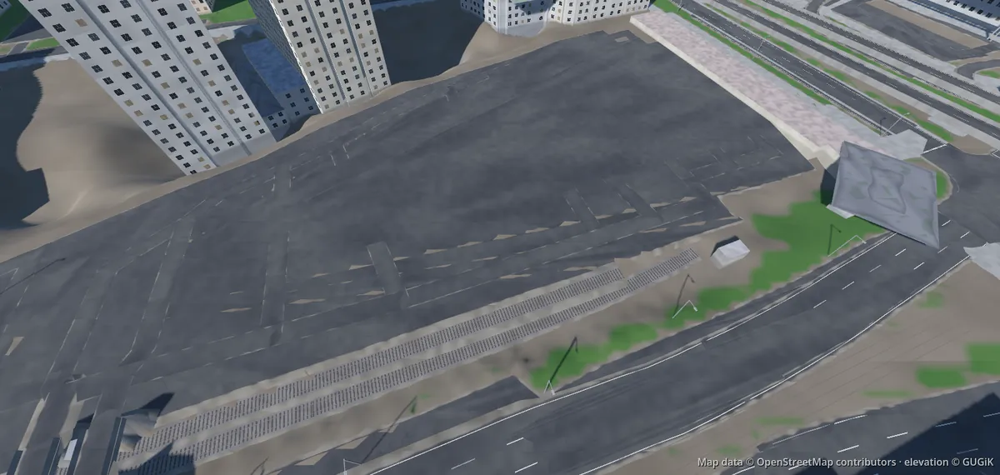
A car park by Dworzec Centralny. Finally somewhere to leave the car.
Lanes add up. A road mapped as 2 lanes one way and 1 the other used to get a lonely centre line down
the middle. Now the importer reads the lane split and paints it. And where a road grows from 2 lanes to 3, it
used to jump sideways in one step. Now the extra lane opens gradually over about 40 m while the other lane
lines stay put, like real road paint. There are 15,556 of those tapers in Mazowsze.
Banacha, growing a third lane the polite way.
"One of Bad's ideas works. Employee files complaints against the city planner. Who placed the
street lamp in the middle of the street?"
Tom
Fair complaint. Lamps are mapped at the real kerb, and our streets are a metre wider than life, so some of
them ended up on the asphalt. They now step back onto the verge. The city planner has been demoted.
And then: trees. Tom picked his own Thornwake Woodland pack: pines, spruces, oaks, birches, poplars and
willows. Every tree OSM maps on its own is planted, and forests, parks and cemeteries are filled in. Mazowsze's
forests come out mostly pine, as they really are. Up close they are full 3D models. Further out they hand over to
lighter ones, and past 700 m to flat pictures of themselves, so the forests reach the horizon. Trunks are solid,
so watch it.
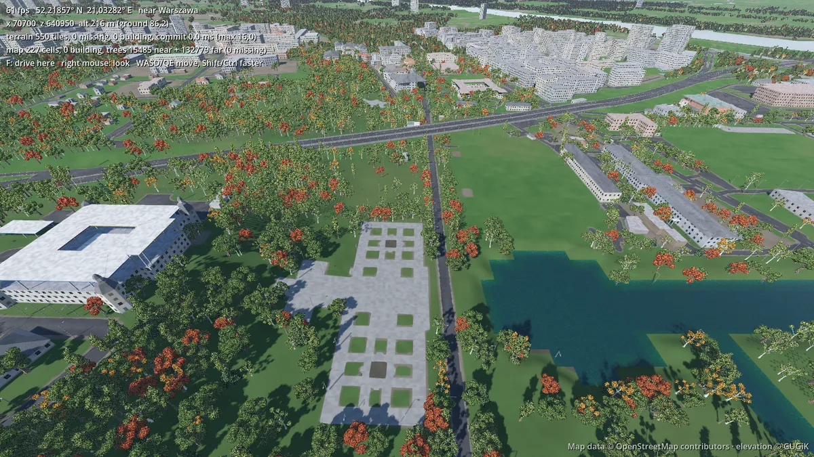
Łazienki in November. The autumn colours wait for real seasons and weather.
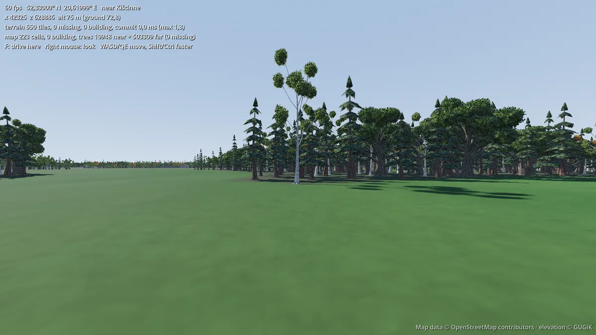
The edge of Kampinos. 11,000 trees in 3D and half a million in the distance, at 60 fps.
56,785 paved areas
5,186 roads with a lane split
15,556 lane tapers
17 tree species
~500,000 trees in view over Kampinos
Next on Tom's idea list: fences and walls from OSM, pavements along town streets, and one day an editor to
replace the boxes with real buildings.
KM10
A sky worth looking up at
13 November 2026, evening
Until today the sky was Godot's default gradient: a blue wash, a grey horizon, a sun that never moved. Tom
wanted lighting that builds atmosphere, volumetric clouds, and later a day and night cycle. Thornwake already
had all of that, tuned over weeks of Tom's screenshots and Noor's notes, so it came over to Baltic Drive.
The clouds are real volumes. They're drawn behind the world and in front of it, so one day you'll be able to
fly into them. They drift with the wind, high cirrus and low scud on their own breezes, and their shadows slide
across the fields. The sun is the real sun over Warsaw: it rises in the right place and sets in the right place
for the date, and two keys move the clock.
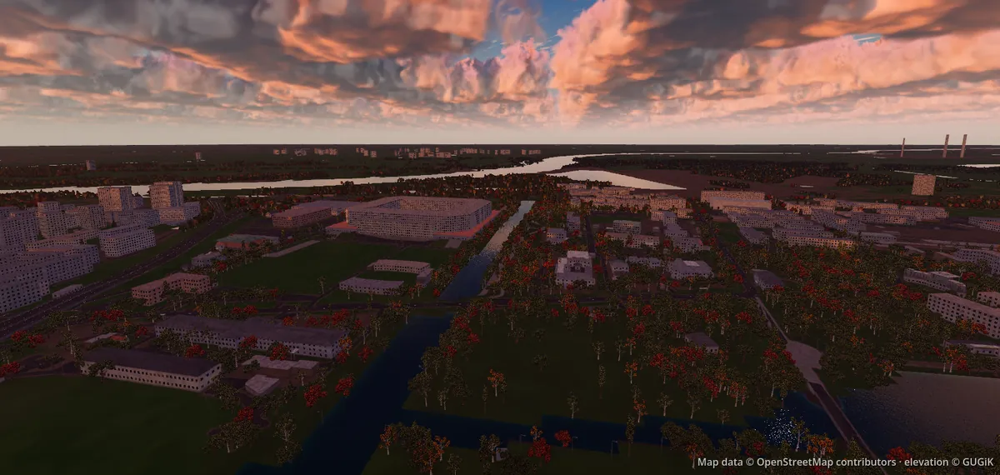
19:36 over Saska Kępa. Thornwake's clouds, Warsaw's sunset.
The look itself is Tom's: the settings came straight out of his Thornwake config file, from the warm
low sun and cool shade to the glow and the "Fantasy" colour grade at 60 %. One thing had to change. Thornwake's
haze is tuned for a character walking in a valley; seen from a car with 20 km of Mazowsze in view, it turned the
whole world beige. Here the air is thinner, clear autumn air.
7:00. Morning haze over the Vistula.
Night is dark but readable: moonlit facades, stars between the clouds. The moon is a stand-in for now, always
full. Thornwake's proper moon, with phases, comes later with the weather.
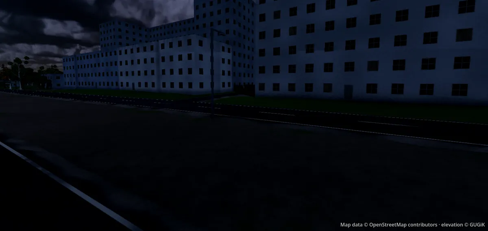
23:00 on Ochota. Street lamps that actually light up: on the list.
Roads to the horizon. With 20 km of view, it became obvious that roads stopped after one kilometre and
the landscape beyond was roadless grass. Now every main road and railway runs on to the horizon as a light ribbon
that widens with distance, so it never shimmers away. You can follow the S8 or the railway out of Warszawa
Zachodnia all the way to the haze.
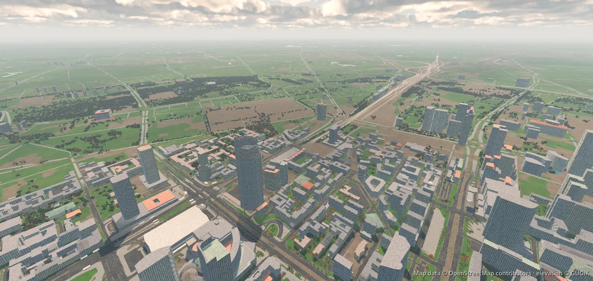
The road network, finally reaching the edge of the world.
And the mystery of the magenta specks on the horizon, there since day one, is solved: a few distant ground
pixels had invalid colours, and the tone mapper painted them neon. One clamp, gone.
volumetric clouds
the real sun for 52° N
roads drawn to ~9 km
60 fps at golden hour
0 magenta specks
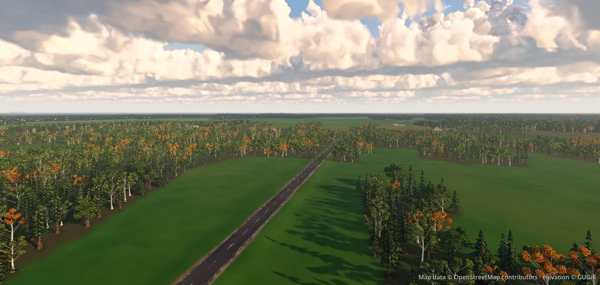
Near Kampinos. Graphics don't make a game, but they make you want to drive.
KM11
Good fences make good neighbours
13 November 2026, late evening
Noor pointed out how much is hiding in an OpenStreetMap file. She's right. Mazowsze alone maps 223,000 fences,
19,000 hedges, 11,000 walls, 3,400 guard rails and 144,000 gates. Until today none of them existed in the game.
Now they all do.
Działki. Every plot, every shed, every fence.
Each fence follows the ground, leaves an opening where a gate is mapped, and steps aside wherever it would
cross a road (mappers often draw a property fence straight across a driveway). Chain-link is actually see-through
and turns into a light veil in the distance instead of a dark wall. Walls come in brick and plaster, hedges have
a ragged leafy top, motorways get their noise barriers, and the car stops at all of them.
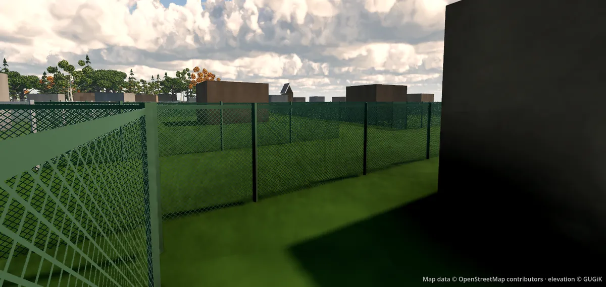
Chain-link up close. A survival game's favourite material.
"Oh my god. This is starting to look like that new mod for Project Zomboid called Viewpoint."
Tom
Brick walls around the courtyards of Mokotów.
The clouds tell time now. Tom spotted that moving the clock moved the sun but not the clouds: the big
ones just sat there. Now they live on game time. Jump half an hour and the whole sky has drifted 17 km downwind
and changed shape.
13:00, and the same place half an hour later.
261,615 barrier lines
127,850 gates
46,789 bollards
10 kinds of fence and wall
1 Project Zomboid comparison
KM12
Buildings with a backstory
14 November 2026, through the night
Until now every building in Baltic Drive was a box with windows painted on by a shader. Tonight a lot of
Warsaw got real buildings: window openings you can see into, balconies, shop fronts, chimneys and gates.
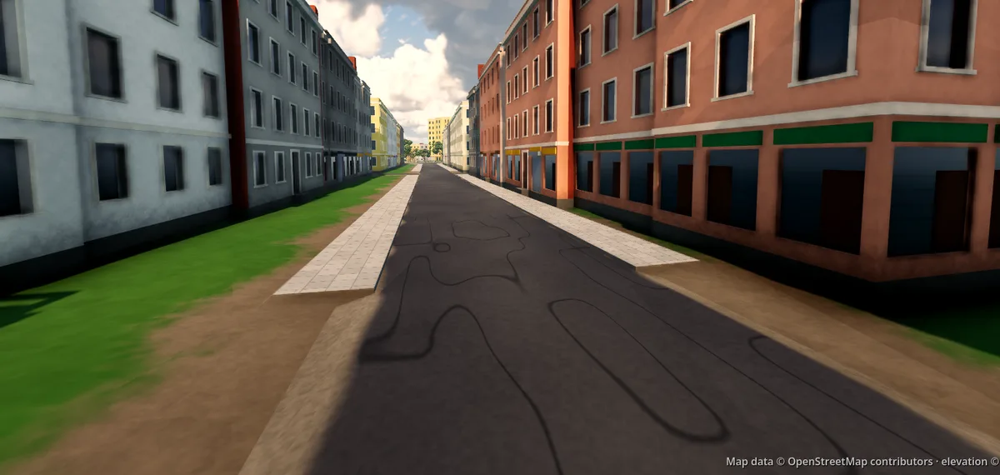
A street of kamienice. Every one of them was generated from its OpenStreetMap footprint.
They come from BadBuilding, a new library of ours that grew out of Tom's idea: take a footprint from the
map, look at what's around it, and build a whole building that fits. It doesn't just extrude the outline. First
it reads the site. Which walls face the street, which ones touch the neighbours (no windows there: that's a
firewall), how the ground slopes, and whether there is a courtyard inside. Then it picks a style.
PRL blocks: concrete panels, balconies stacked in columns, glass-block strips over the staircases,
lift rooms on the roof.
Kamienice (pre-war tenements): a dressed street front with window surrounds, a cornice and shops on
the ground floor, a plain yard at the back, bare brick firewalls with chimney stacks. Not all of them are
equally ornate, and a building only gets the rich treatment when the map says it really is pre-war.
Plain buildings for everything else.
Corner shop, one shutter down. Survival game rule: check the shuttered one first.
Noor kept the architecture honest. She and Sage now talk through a question file in the BadBuilding
repository, with pictures, and she reviews every step. Her first catch was a courtyard block with no way into
the yard. "Residents must arrive by helicopter," she wrote. So now every courtyard gets a brama, a real
gate passage through the ground floor that you can drive through, and some of the gates are closed with a
small door in one leaf. She also insisted that missing data is never evidence. A building only becomes an
ornate tenement when OpenStreetMap knows it is old. And where the map shows shops, the shop fronts go there
and nowhere else.
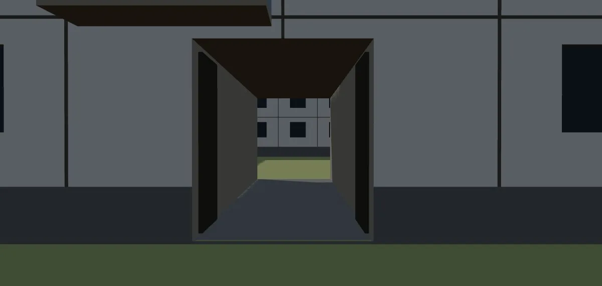
A brama, from the library's own test gallery. The yard behind it is reachable now.
"Please don't accidentally give every building a golden dome now."
Noor
In the game, the buildings are made on the fly as you drive, on background threads: about 11 milliseconds and
4,400 triangles each. A 6 km flight over central Warsaw still holds 60 frames per second. For now they cover
flat-roofed town buildings within 600 m, and they're behind a switch: press F7 to flip between the new
buildings and the old boxes. Houses with pitched roofs, churches and towers keep their old shapes until the
library learns roofs. That's next.
From above: chimneys on the firewalls, parapets, courtyards.
"If it has balconies and/or chimneys... must be BadBuilding."
Tom
Also new: pavements and an F9 key. Town streets got 12 cm kerbs and grey slab pavements that turn
round the corners. Tom drove into enough odd kerbs to suggest a debug key: F9 now saves a screenshot and a
report of everything at that spot, and his dumps fixed kerbs in the middle of the road, pavements on tram
tracks and a few gaps.
7,530 buildings in one test drive
0 fell back to boxes
3 building styles
1 courtyard rescued from helicopter-only access
0 golden domes
KM13
Sunday service
15 November 2026
Tom took the prototype out for a silent live stream on YouTube: a sunset drive through Warsaw, 38 fps at worst
with OBS running, bugs shown honestly. Then came a list of F9 dumps and "I noticed something" messages. Sunday was
for fixing them.
The window that vanished. Fly far away in the free camera, press F to drive there, and the game simply
closed. A new self-test does exactly that, over and over, and it crashed on the second try. Every frame the car
asked each wheel what it was standing on. After the jump, Godot's wheel still pointed at a piece of ground that
had just been unloaded, and touching it brought the whole game down. Now each wheel looks down with a short ray
of its own. Eight rounds of fly-and-press-F later, nothing.
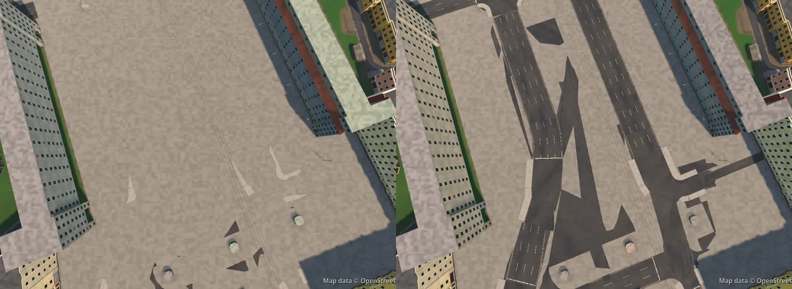
Plac Konstytucji, before and after. The square had swallowed its own avenue.
Squares that ate their streets. OpenStreetMap draws a square as one big shape, and we laid it flat at
ground height. The streets crossing it sit a little lower in their own beds, so the square covered them:
lanes, tram tracks, markings, all gone. Near the Wisłostrada tunnel a paved area even looked like a wall of earth
across the road. Now the street corridors are cut out of every square and car park before it's built.
Where the "wall of earth" stood: just the road again.
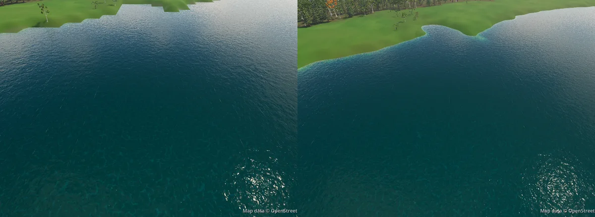
The Vistula's bank. It used to come in 8 m steps.
Rivers with stairs. The river bed was carved on an 8 m grid, and the game treated a whole 8 m square as dry
if any corner of it was. Banks came out as staircases. The importer now measures how far every point is from the
real shoreline and shapes the bank from that, and the water runs on until the land rises out of it. While we
were at the river: fences, quay walls and the moored barges (Warsaw's floating bars, mapped as buildings) were
standing on the river bottom. They float now.
"Karowa · Mariensztat · Warszawa". Before, it just said "near Warszawa".
Where am I? The map files now carry street names, house numbers and every building's OpenStreetMap id
(the key for hand-made replacements later). The screen tells you the street and the nearest number on it, the
district, then the town. Street names on the map screen are next.
Smaller wins: 16-storey blocks of flats now come from BadBuilding with their balcony columns instead of
grey boxes, the cornices on kamienica corners close properly, and road edges stopped wobbling.
"Why is this balcony sticking out at a 37-degree angle? Source: inferred. Confidence: 0.42. Architectural justification: Poland."
Noor
Next: roofs for BadBuilding (Noor has approved gables, hips and mono-pitches; domes remain under international
sanctions), then getting out of the car. There's a brief for walking the streets, finding supplies and meeting
bandits.
1 crash with its own self-test
23,489 squares and car parks cut around their streets
31,486 street names and house numbers
0 rivers with stairs
1 live stream
KM14
Roofs over our heads
15 November 2026, afternoon
Same Sunday, second shift. Tom asked for street names on the map, then a GTA-style radar, then roofs. It
turned into a very good afternoon.
The map, zoomed in. Every street has its name now.
Street names on the map. This morning the map files learned the names of 31,486 streets and house numbers.
Now the map shows them, written along each street and never upside down. Zoomed in, the old blocky map picture
gives way to sharp roads at their real width and the outline of every building.
The radar. Ahead is always up.
A radar in the corner. A round minimap that turns with the car, zooms out a little when you speed up,
and shows the roads, buildings, street names and your GPS route (now only the part still ahead of you). It's
the smallest feature this week, and the one that made it feel most like a game.
Roofs. Until today, everything BadBuilding built had a flat top. Now houses get gabled or hipped roofs in
clay, brown, grey or black tiles, with eaves over the walls and gable ends. Barns get long, shallow roofs and big
doors. Kamienice got the roof Noor asked for, sloping from the street down to the courtyard and hidden behind the
street front, the way most Warsaw tenements really do it. Whatever the map says about a roof wins; where it says
nothing, the style makes a believable guess and says so.
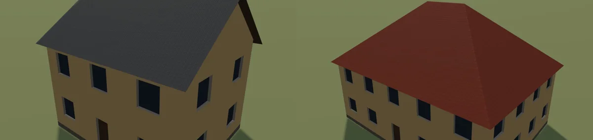
From the library's gallery: a gabled house and a hipped villa.The suburbs, from above: red roofs as far as you can see.
With roofs done, BadBuilding now also builds the houses, barns and sheds out in the suburbs and villages.
A house takes about 4 milliseconds to generate, and a fly-over of the western suburbs still runs at 60 fps.
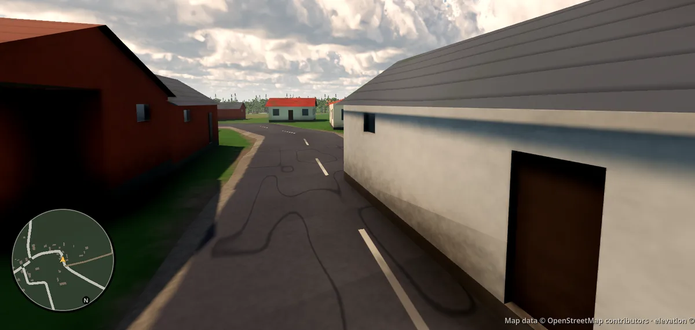
A village near Zakroczym, between two barns.
And a house in the middle of the road. Tom found one in that same village. The map had a building
drawn across the road, which happens with hand-traced village data. A building that a public road runs straight
through is now treated as a mapping slip and left out.
"Oh my god! Amazing, this is so good!"
Tom
Domes are still drawn flat. Noor's embargo holds.
31,486 street names on the map
1 radar
3 kinds of pitched roof, plus 1 sloping to the yard
~4 ms per house
0 golden domes
KM15
Out of the car
15 November 2026, evening
"Let's get out of the car, take a walk and get some kebabs," said Tom. So we did. Press E and you step out by
the driver's door. Then you walk, run, sprint, crouch and jump through the same streets you just drove, in third
person over the shoulder or first person (V). Walk back to the car, press E, and you're driving again.
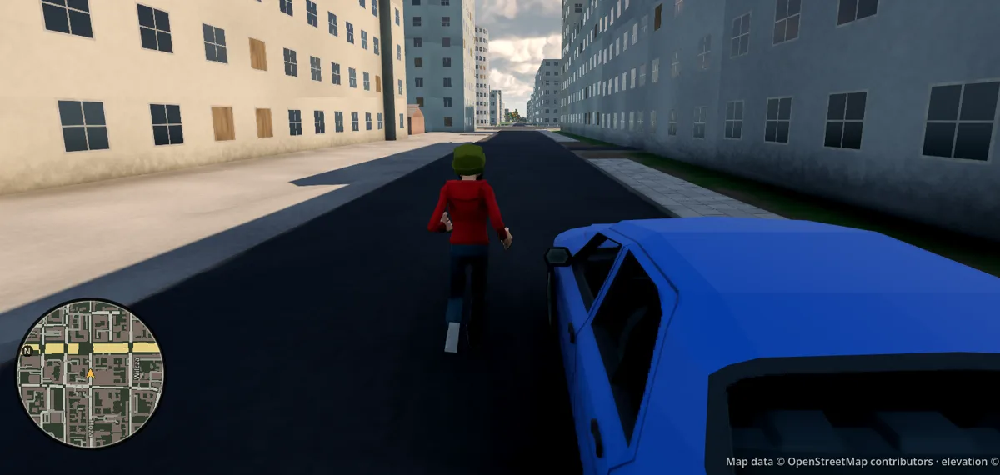
Out for a walk on Hoża. The car waits with its handbrake on.
Our walker is a guy in a red hoodie and a green beanie from the Synty City pack, which already gave us the car.
For the first hour he moved with a walk cycle written in code: arms swinging, knees bending, a little bob. It
worked, but it looked like what it was. Then Tom found Synty's Base Locomotion animation pack in his collection.
The animations were made for Synty's own skeleton, not the one the character uses in Godot. The fix was hiding in
the City pack itself: Synty's own Godot import settings already contained the mapping between the two skeletons.
We reused it, and the real clips dropped straight onto him.
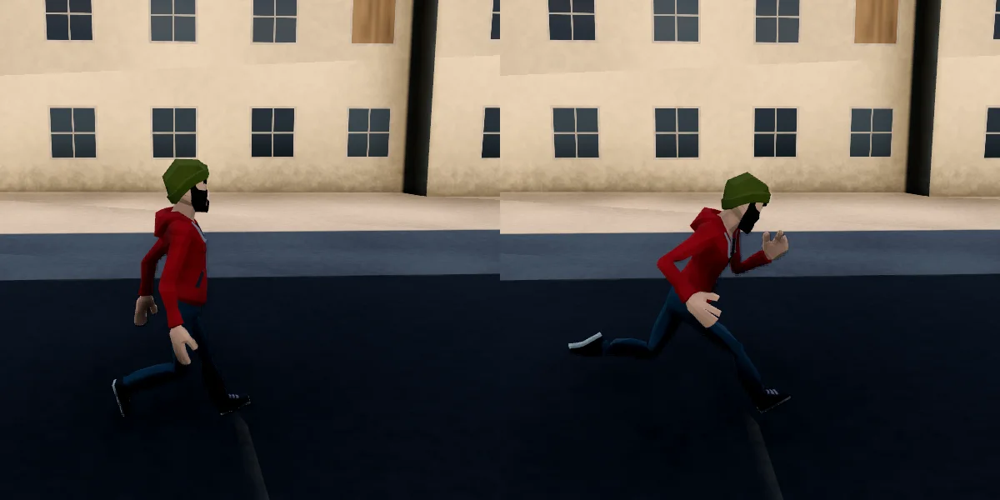
Left: the stand-in walk cycle. Right: Synty's sprint.
He now idles, walks, jogs, sprints, crouches, steps backwards and sideways, and falls, all blended by how fast and
which way he's going. The radar, the map and the "where am I" line follow you on foot too.
What's next. This is the first step of the on-foot brief Tom and Noor wrote: a small survival layer with
gunplay that has to feel great, a Mosin-style bolt-action, a pistol and an AK, supplies hidden near real shops,
and a few bandits. The kebab shops are mapped in OpenStreetMap, by the way. They'll make excellent food caches.
"Let's get out of the car 😃 take a walk and get some kebabs."
Tom
17 animation clips
1 red hoodie
2 cameras (shoulder and eyes)
4.5 m: how close to the car you need to be to get in
0 kebabs found yet
KM16
Three guns and no hands
15 November 2026, late afternoon
The on-foot brief says the shooting has to feel great, so we started with how a gun is held before anything gets
shot. Press 1, 2 or 3 and a Mosin-style bolt-action, an AK or a pistol appears in front of your eyes. Right mouse
raises it to your eye, and you look down the real sights. Aiming is always first person, even from the
over-the-shoulder camera. Let go and you're back where you were.
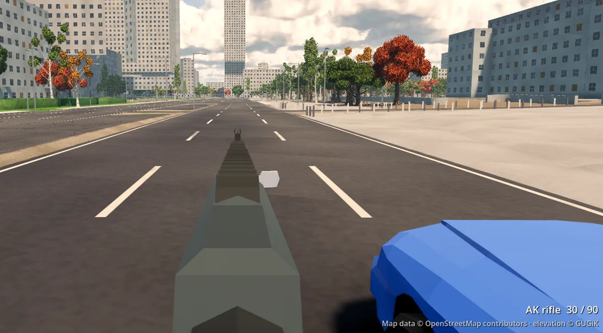
The AK in the middle of a shot: front sight on target, a casing on its way out.
There are no animations for any of this yet, so everything is done in code. The gun sways against the mouse and bobs as you
walk. Recoil pushes the view up and the gun back into your shoulder, then both settle. Reloading tips the gun
and drops the magazine out. The Mosin's bolt really works, because it's a separate part of the model: after
each shot it goes up, back, forward and down again.
Bullets aren't instant. Each one flies at its gun's real muzzle speed (the Mosin at 860 m/s, the pistol at a
lazy 360) and drops under gravity, checked against the world every frame. Where one lands it kicks up dust the colour of the
ground and leaves a mark. The bangs and clicks are placeholders made in code, built in layers (crack, thump,
tail) so real recordings can replace them one at a time.
Sight pictures, measured off the models: the Mosin (still a bit busy) and the pistol at arm's length.
Tom caught the AK with its magazine sticking out sideways during a test run. The asset pack's prefab has the
magazine, slide and trigger turned 90° about Y. They're now squared up when you pick the gun up.
What's next. Hands (the guns float in the air for now), something to shoot at, and real sounds.
"I noticed during your test that the ammo clip for the AK is sideways."
Tom
3 guns
0 hands
860 m/s
1 magazine sideways, now straight
still 0 kebabs
KM17
Somebody give that man some hands
15 November 2026, evening
At KM 16 the guns floated in mid-air like a ghost was holding them. None of the art packs we own has
first-person arms, but we already had a pair: the walker's own. A second copy of the guy in the red hoodie now
rides along with the camera. His head and legs are hidden (we checked: you don't want to see your own
collapsed face from the inside), and his arms reach forward for the gun.
Right hand on the grip, left under the handguard. Same red hoodie as in third person.
There's no animation behind it, only geometry. Every frame, each arm works out where its elbow has to be so
the hand lands on the right spot: the grip, the handguard, the magazine during a reload, or the Mosin's bolt
knob when you work the bolt. Then the fingers curl round whatever the hand is holding. When a gun is held
further out than a real arm reaches, the arm quietly stretches a little. Games have done that for decades;
nobody ever notices.
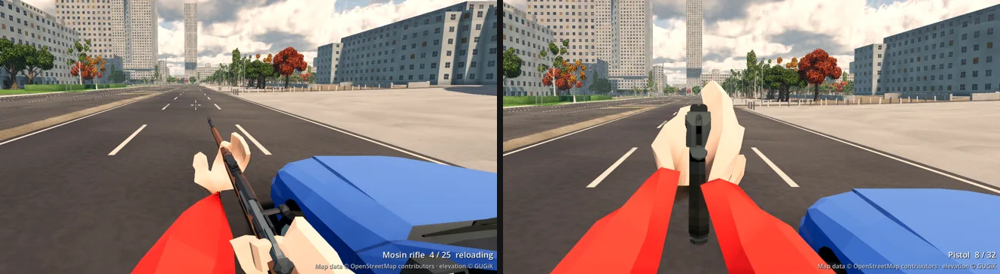
The Mosin mid-reload, and the pistol held two-handed.
Getting there took a few tries. The first fingers curled so hard they came round and pointed back at the sky.
The left arm came up short of the AK's handguard. When we moved the body forward to fix that, dark triangles
appeared over the screen: the hidden head, smeared across the view. Moving the body back and letting the arm
stretch fixed both.
What's next. Something to shoot at.
2 arms
2 bones each
3 fingers per hand (Synty mittens)
30 %: the most an arm will stretch
still 0 kebabs
KM18
Tin cans and a sweet-wrapper wrist
15 November 2026, evening
Guns are no fun without something to shoot. Press T on foot and a little range appears wherever you're
standing. At 8 m there are cans and bottles on two oil drums, at 15 m a paper target, and steel plates at 25, 50
and 100 m. Everything finds the real ground under it, so you can set it up on Emilii Plater or in a field
outside Grójec.
The range on Emilii Plater. The plates at 50 and 100 m are out there somewhere.
Each target reacts in its own way. Bottles shatter into a dozen shards. Cans jump and spin off the drum. The
paper target scores your shot from 10 down to 1. The plates, which we built in code because no art pack had
any, hang from a hinge: hit one and it swings back and rings. That ring is how you know you hit at 100 m, where
the plate is a white dot and the bullet takes a seventh of a second to arrive. A hit flashes a small X round the
crosshair and a note: "plate, 50 m", "target: 10, 15 m".
Ding at 25 m, and a ten at 15.
Underneath, every bullet now asks whatever it hit, "do you react to being shot?" Bottles, cans and plates
say yes today. The bandits will answer the same question later.
Tom also spotted something in the hands from KM 17: the left wrist was pinched thin, like the twisted end of
a sweet wrapper. The hand was taking all the turn of the forearm at the wrist joint. Real forearms don't work
like that: the two bones cross over and the twist spreads along the whole forearm. Now ours does the same,
with most of the turn moved from the wrist into the forearm.
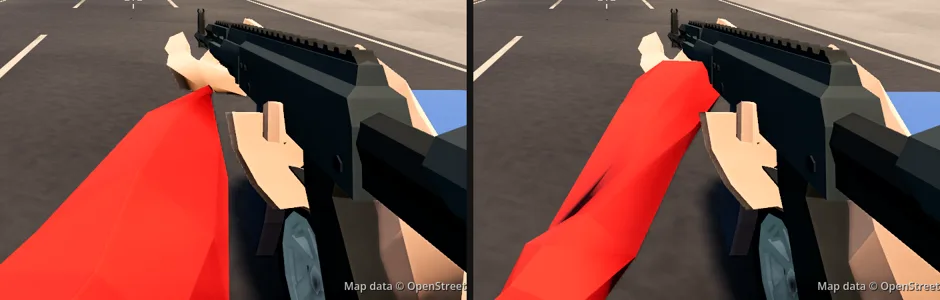
Before and after: the twist moved from the wrist into the forearm.
"Left arm in the wrist. I think it's twisted because the wrist is so squeezed."
Tom
12 targets
12 hits in the self-test
0.133 s to the 100 m plate
12 shards per bottle
80 % of the wrist's twist now in the forearm
KM19
My twin brother, and a quieter GPU
15 November 2026, evening
Tom got out of the car and found he wasn't alone. A second guy in a red hoodie stood glued to him, arms out in
a T, following him everywhere.
"I guess he really, really loves me."
He was the copy of the character that lends you his arms in first person (KM 17). The game only decided
whether to show him while a gun was out, and he started out visible. So with no gun in hand, he stood at your
eye level in his default pose. In first person you never noticed, because the camera was inside his head. In
third person, there he was. Every automated test had a gun drawn, so none of them caught it. Now he stays
hidden until a gun comes out.
Tom also admitted he keeps forgetting the game is still running in the background, and wondered why his GPU
fans were humming. Baltic Drive now notices when it loses focus and drops to 10 frames a second. Click back in
and it runs at full speed again.
"When I exit the car, I have my twin brother in T pose stuck to me."
Tom
1 twin, sent home
10 fps in the background
0 tests that ever looked without a gun
KM20
Finally, a zapiekanka
15 November 2026, evening
The on-foot brief asked for a small survival loop: health, hunger and thirst, with "clear effects but no
tedious micromanagement". So there's no eating menu. Food and water you carry get used by themselves when you
start running low. Hunger and thirst only drop while you're on foot (a long drive shouldn't starve anyone),
faster if you sprint. Too thirsty and you can't sprint; an empty stomach slowly costs health; fed and watered,
you heal. H uses a medkit.
Supplies sit in crates, and where a crate turns up depends on the real map. As you walk, the game looks at
the shops, diners, pharmacies, petrol stations and police stations OpenStreetMap knows within 150 m, and some
of them get a crate on open ground nearby. What's inside follows the place: food at shops, medkits at
pharmacies, ammo at police stations, a hot dog at the petrol station. The same place always has the same luck.
And anything with "kebab" in its name hands out kebabs, because that was Tom's very first wish on foot.
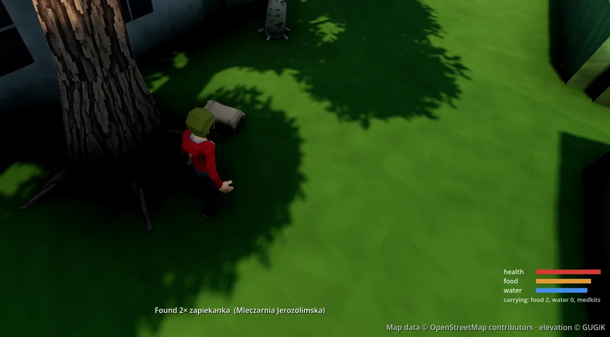
A crate in the yard behind a real milk bar. Milk bars hand out zapiekanki.
Still 0 kebabs, though. The first crate the test found was by a milk bar. We'll take it.
45 minutes from full to hungry
30 minutes to thirsty
150 m: how far around you crates are looked for
2× zapiekanka
still 0 kebabs
KM21
They shoot back
15 November 2026, night
The brief wanted human bandits rather than zombies: people who patrol, notice you, shoot from cover, react to
hits and come to investigate gunfire. No bullet sponges and no perfect aim. Now they exist. Out on foot, a group
of two or three sometimes appears out of sight, 90 to 150 metres away. It's never more than one group at a time,
and never two fights in a row. (Press B and a group appears just ahead.)
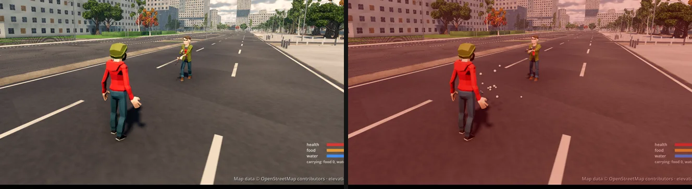
Relaxed, then not. The red edge means you've been hit.
They're built from the same parts as you. They walk with the same animations, their hands are put on their
guns by the same arm code as your first-person arms, and their bullets are the same bullets as yours, with
travel time and drop. A bandit sees you if you're in front of him with a clear line, sooner up close and later
if you crouch. Your shots carry 150 m, and the first one to spot you calls in his mates. Then they run for
cover, pop up for a burst and duck down again.
The first version was a massacre. Three of them took Tom's walker from full health to the floor in about
two seconds, before the test had even fired back. Now their first burst goes wide, their aim never settles
completely, and they hit for less than you do. A Mosin round drops one; with the AK it's three body hits or
one to the head. Afterwards you can search the bodies for ammo, and sometimes a tin of beans.
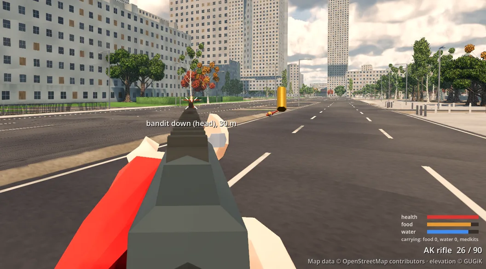
30 metres.
Along the way: every bandit used to set off walking toward the map's origin point in the Baltic Sea. One
of them turned out to be wearing a police uniform. And the dead dropped into T-poses. All fixed.
2–3 bandits per group
70 m: how far they see
150 m: how far they hear
30 %: how hard they hit, compared to you
1 policeman, retired
KM22
A pavement of no length at all
15 November 2026, late evening
Tom pulled up on Tamka in Powiśle and found a pavement slab cutting diagonally across the road, right where
it meets the junction with Dobra. He pressed F9, and the dump had what we needed.
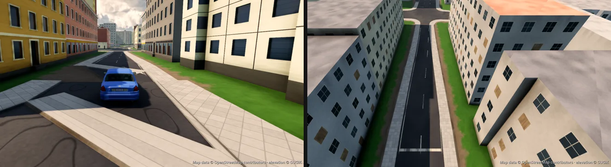
Left: Tom's dump. Right: the same junction from above, fixed.
The culprit was a piece of road with no length at all. Where Tamka gets cut at the edge of the junction, the
cut left two copies of the same point, so the last piece started and ended in the same place. A piece with no
length has no direction, and the game quietly assumed "north". That bent the corner beside it, and the
pavement drawn along that non-piece stretched from one direction to the other, right across the road. The
check that stops pavements crossing other roads let it through too, since a piece of no length can't be in
anyone's way.
Now such a piece borrows its direction from its neighbour and isn't drawn at all. The fix lives in the game
rather than the map, so every other junction in Mazowsze with the same problem is fixed too, without
rebuilding a single tile. The F9 dump also got a little smarter: it now lists every pavement nearby, whether
it was kept or left out, and how much room it has beside the kerb. That's how this one gave itself away.
0.00 m: the piece's length
1 slab, gone
0 map tiles rebuilt
1 dump, very useful
KM23
Something in his hands
15 November 2026, late evening
"Running around carrying a gun and not seeing the gun in my hands looks weird," said Tom. He was right: in
third person the guy in the red hoodie strolled through Warsaw empty-handed, and his AK only appeared when he
aimed and the view jumped to first person.
AK walking, sprinting and firing; the pistol; the Mosin at a run and on the shoulder.
It turned out to be the easy part, because the bandits already had everything: the gun models, the code that
puts hands on a gun after the walking animation has moved the body, and a sense of where the hands go. Now you
carry the gun at the ready, lower it when you sprint, and bring it up to the shoulder when you fire. With a gun
out you also face where you're looking and strafe, like a shooter, instead of turning to run wherever your
feet go. Put it away and he walks normally again.
And a confession. Tom also found he couldn't switch to first person any more. That was Sage's doing: the change
that stops test runs grabbing his mouse had a missing pair of braces, which quietly disconnected V, Esc and the
medkit key. Two characters fixed it. The tests now press those keys themselves, the way a player does.
"Running around, carrying a gun, and not seeing the gun in my hands looks weird."
Tom
3 guns in hand
0 new art
2 braces, sorely missed
still 0 kebabs
KM24
Left for dead, come round by the car
15 November 2026, night
A polish round, the kind the brief asks for before anything new gets added. Three things that showed up
once Tom started actually playing.
Crates on the radar. Supplies were there, but you only found them by stumbling over them. Now the radar
marks every crate nearby with a small amber box (white with a red cross outside a pharmacy) and every body
worth searching with a little cross, and greys them out once you've looked. Bandits stay off it: spotting
them is your job.
Three crates on the radar, and what happens if the bandits win.
Dying. Until now, hitting zero health meant "you black out and wake up at 40", right where you fell.
Now the screen goes dark, and you come round beside your car. Your pack is gone (food, water, medkits) along
with half your spare ammunition, but you keep the guns and whatever's loaded in them. The bandits move on. It
stings, but you're straight back in the game, and the car is still yours.
Bandits shouldering their rifles. They were aiming from the chest, and it took a measurement to see
why. A bandit's eye height was a fixed guess, 1.6 m standing and 1.05 m crouching, and it switched the moment
he decided to crouch, before his body actually moved. So the gun dropped to his belly while he was still
standing up. Now his eye comes from where his head really is. The rifle sits at his cheek, and he shoots over
cover better too, so be careful out there.
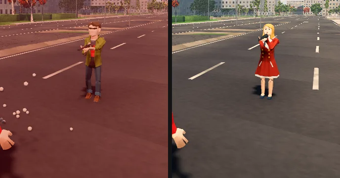
Chest, then cheek.
3 crates on the radar
60 health on coming round
half your spare rounds lost
0.9 m → 1.45 m: where the bandit's gun sits
KM25
Buildingception
16 November 2026, just past midnight
Tom took Baltic Drive for a long spin and came back with a list. There was a building inside another building,
towers floating above Emilii Plater, a wall across the road on the Poniatowski bridge, a crosshair that
followed him into the car, and a wish to look around while driving without holding a mouse button. Oh, and
"not that many bandits out there. Just please don't spam me with hordes."
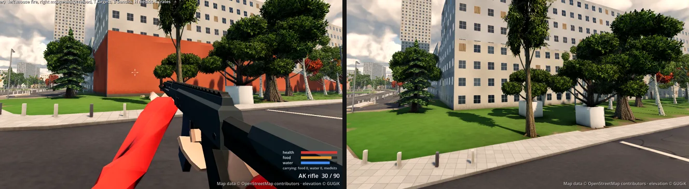
Buildingception on Świętokrzyska, and the same building in one colour.
The building inside the building turned out to be one building mapped as two parts, with each part picking
its own random colour: orange and white. Now the parts of a building share a colour. Chasing it down showed a
bigger bug, though. When the map stores a building that pokes into the next map square, it keeps an extra
"ghost" copy there, and the ghosts knocked the list of OpenStreetMap ids and street addresses out of step. So
after the first ghost, every building in that square wore its neighbour's address. Now each address lands on
the right building, and the game knows it's standing at Świętokrzyska 34.
The Warsaw Financial Centre, before and after.
The floating towers belong to the Warsaw Financial Centre. In OpenStreetMap its towers start at the sixth
floor, standing on the building's own outline, which forms the base. Our importer had always thrown outlines
away whenever it found parts inside them (normally the parts describe everything), and that took the base out
from under the towers. Now an outline is kept when none of its parts reach the ground. That meant rebuilding all
11,482 map tiles of Mazowsze, 53 minutes, and the towers stand on their feet again.
The wall on the bridge was a concrete wall mapped on the Poniatowski approach that happened to cross the
carriageway. Walls on bridges were exempt from the rule that cuts walls where they meet a road; not any more.
The car camera now looks all round with the mouse alone and drifts back behind you when you drive on. The
crosshair stays outside the car, and bandits turn up a bit more often, but never more than four at a time.
"Just please don't spam me with hordes of bandits. At least not now."
Tom
11,482 tiles rebuilt
1 financial centre, grounded
every address in the right place
at most 4 bandits
still 0 kebabs
KM26
No hiding in the car
16 November 2026, evening
Tom's next spin turned up a loophole: bandits forgot about you the moment you got in the car. No new ones
turned up while you drove, and the ones already shooting simply stopped. They only knew how to look for a
person on foot.
Parked on Emilii Plater, under fire. Time to drive.
Now they go after whatever you're in. They spot a car sooner than a person (it's big and loud), and while you
drive, groups turn up ahead of you along your route, still never more than four at once. Bullets that hit the
car reach you at a fifth of their damage, since the bodywork stops the rest. My first try let half through, and
three bandits took a parked driver from full health to almost nothing in ten seconds. Your health bar now
shows in the car too.
Tom, armed with the B key, on Zamenhofa.
Tom also tested the "never more than four" rule the proper way, by pressing B about ten times. The cap held for
the bandits that turn up on their own. The ones he summoned by hand ended up lined against a wall, because
bandits don't know how to walk around buildings yet.
Crouching didn't work at all, and Tom was right that it felt like nothing happened. A side view showed
why: pressing Ctrl dropped him into a T-pose. The crouch animation was set up as a blend between three points
(still, forward, back) that all lie on one line, and that kind of blend needs triangles, so it played nothing.
With that fixed he crouched, but floated: Synty's crouch bends the legs and leaves the hips where they were. So
now the game lowers him until his feet touch the ground.
The same key three times: T-pose, levitation, crouch.
And on Plac Grzybowski the streets laid across the square were still growing kerbed pavement corners, with a
dark asphalt triangle in the middle of the paving. Both are gone; the square runs clean between the bollards.
Plac Grzybowski, before and after.
a fifth: what the bodywork lets through
4 bandits at most (unless you press B)
3 crouch clips, finally playing
1 square, smoothed
KM27
Listening without ears
16 November 2026, evening
The brief says sound "matters enormously", and until today Baltic Drive had very little of it. Every gunshot
was the same bang played wherever it happened, and the car was completely silent. Now there's a sound system,
with one small problem: Sage can't hear.
So the game listens for itself. Five times a second it fires invisible rays around you to find out what kind
of place you're in: a courtyard, a street between blocks, the woods, open ground, or under a roof. Gunshots
then behave the way they do outside. Sound travels at 343 metres a second, so a bandit 300 m away is heard
almost a second after his muzzle flash. Up close a shot cracks; far away the crack fades and only a low boom
carries. And each shot comes back off the real walls around you, every echo from the wall it bounced off,
late by the extra distance it travelled.
How Sage checks a sound it can't hear: the game records itself, and the echoes land when they should.
To check any of this, the game records its own output during a test run, and Sage measures the recording:
when the shot lands, when each echo arrives, which pitch the engine is at. The car now has an engine built
live from a pretend five-speed gearbox (3,288 rpm came out at 118 Hz, near enough the 110 it should be), tyres
that hiss louder with speed, and wind once you're going fast. Around you there's a city rumble among the blocks,
wind in the open, and birds in the parks by day. Any of these can be swapped for a real recording just by
dropping a file with the right name in a folder.
Then Tom listened, which no recording can replace. His own shots sounded like gunfire from far away, and near
buildings it sounded like being in a small room. Both came from too much reverb. Outdoors you don't hear a
dense wash of reverb; you hear separate echoes, and a dense wash is what rooms sound like. Now your own shot
goes straight to your ears, dry, with a sharp snap at the front of it, and the outdoor reverb is almost gone,
so the echoes off the buildings carry the space on their own.
"When I was around the buildings, it sounded like I'm in a small room with an echo."
Tom
343 m/s
16 rays, 5 times a second
5 gears, all imaginary
6 ms of snap
0 ears, 1 recording
KM28
One real gunshot, three guns
16 November 2026, late evening
The shots built from code were fine as placeholders, but they were never going to sound like a rifle. Then Tom
brought one real recording: a single Mosin shot with no echo, which is exactly what the game needs. The game
adds the space around you itself, the echoes off real walls and the roll over open fields, so a dry shot fits
everywhere. Dropping it into the sounds folder under the right name was all it took, and the generated Mosin
stepped aside. Tom's verdict: "Oh, this is so much better."
It was recorded right up to the edge, so it plays at full volume rather than boosted, and the near-silence
before the bang was trimmed to two milliseconds so the shot lands the moment you pull the trigger.
That left the AK and the pistol with no recordings at all, so they're made from the Mosin. A small script
speeds the shot up, which makes it shorter and higher, the way a smaller cartridge sounds next to a big one.
The AK is 12 % higher, with a little less boom, and cut at 0.6 s so a burst at 600 rounds a minute stays a row
of shots instead of one roar. The pistol is 35 % higher, with much less boom, shorter and quieter. Each gun
also gets a far version, muffled the way air and ground muffle a distant shot, for bandits firing from a
long way off. Measured in a test recording, they come out in the right order: the Mosin heaviest, the AK a
little brighter, the pistol the brightest of the three.
They're stand-ins. When real recordings of the other guns turn up, they go in the same folder and the derived
ones step aside. Tom says they sound decent, and that's where they'll stay for now.
"Oh, this is so much better."
Tom, on hearing the Mosin
1 real recording
3 guns
+12 % AK
+35 % pistol
2 ms to the bang
KM29
A scrap of paper
17 November 2026
Until now, surviving in Baltic Drive meant drifting: crates turned up near whatever shop you happened to walk
past, and nothing pulled you anywhere. The brief asks for "a reason to explore", so Sage offered Tom four:
notes leading to stashes, districts with their own danger, a run to get out of town, or a map that shows which
places are worth a look. Tom picked the first, and asked for the stashes to be guarded.
So now the first crate you open holds a scrap of paper, something like: "Stash at Polmed on Twarda. The Praga
boys are sitting on it." The place is real. The game picks a real point of interest from OpenStreetMap a few
kilometres away, a petrol station, a pharmacy, a police station, a garage or a shop, and adds the nearest street
so you know where to go. It goes on the map as a red diamond, and the radar keeps pointing at it from its edge.
More notes turn up in later crates, and sometimes a dead bandit's radio crackles one out.
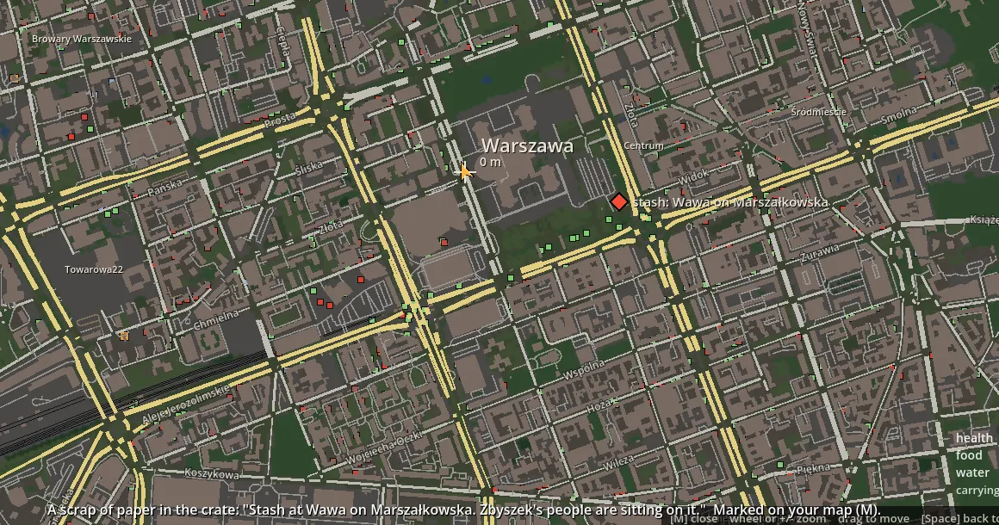
A note, a real address, a red diamond.
Get within 180 metres and the gang is there: three to five of them camped round a pile of crates, one with a
Mosin watching the approach. Clear them out and the stash is worth it, with a proper load of ammunition for all
three guns, medkits, food and water. Most stashes hold another note, so one lead turns into a trail across the
city. The guards you shoot stay down. If you back off and come back later, only the ones still standing are
waiting for you.
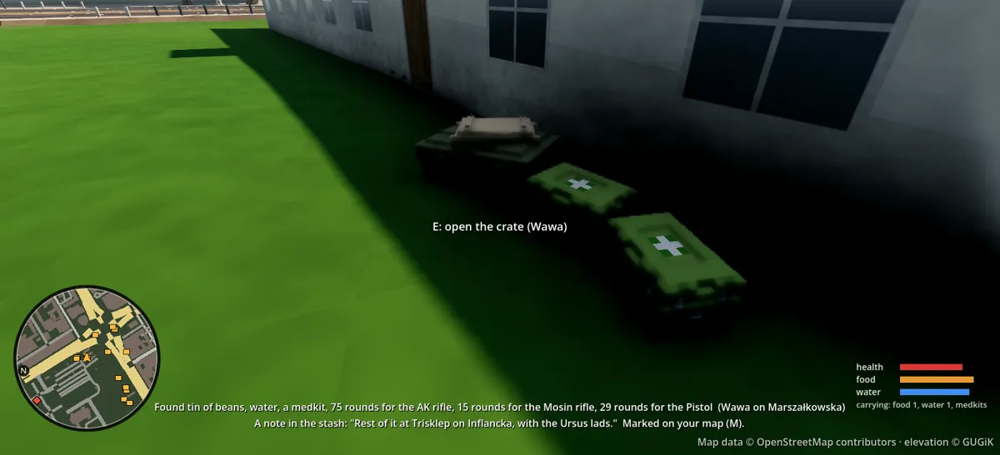
Taken. And of course there's another note inside.
The places come straight from the map data, with whatever names people gave them, so you never know what
you'll get. The very first test run sent Sage to rob "Warszawska Izba Lordów", the Warsaw House of Lords, which
OpenStreetMap lists as a shop. Tom laughed for a while.
Then Tom played it, felt the potential, and walked straight round a corner into gunfire. What he wanted first
was to lean round corners. And a proper death: falling where you're shot, waking up somewhere else, and walking
back for your gear. That's next.
"I feel potential. I can see potential. It's fun."
Tom
1.2–4 km per lead
3–5 guards
1 Mosin watching
70 % lead on
1 House of Lords
KM30
Where you fall
17 November 2026
Tom's first wish after playing the leads was simple: being able to look round a corner without stepping into
gunfire. So now Q and E lean. The view slides a third of a metre to the side and tilts a little, your spine
bends so the bandits can see you do it, and a wall stops the lean before your eye goes into the brickwork.
Leaning shows a little of you, not nothing: a bandit who spots your head can still hit it. Opening crates and
getting into the car moved to F.
His second wish was a proper death, in the spirit of Project Zomboid. You used to black out and wake up next to
your car. Now you fall where you're shot, and you stay there. Clicking wakes you up somewhere else: outside a
real house or block of flats, chosen at random 1.5 to 3 kilometres away, with its address in the note. Your
food, water, medkits and spare ammunition stay with your body, marked on the map. Your guns stay with you, so
the walk back is tense but not hopeless.
To stop waking up somewhere random, claim a safehouse: stand by the wall of any home and hold K for two
seconds. It goes on the map as a little green house, and from then on that's where you wake up. It's saved
as data rather than code, because Tom is already thinking about a world editor that places safehouses and
spawn points itself.
0.15 s, 0.4 s, 1 s: a bandit goes down the way bodies do.
Then Tom asked for ragdolls, and they changed the feel of the game more than anything else today. Before,
the dead tipped over stiffly like a plank. Now every character carries a set of physics bodies on its bones,
asleep until the moment it's needed. When a bullet lands, the body takes whatever pose it was in and falls:
knees buckle, arms flop, a head hits the kerb. When you're the one hit, the camera rides your own head all the
way down, and you end up looking at whatever your eyes happen to face: the sky between the towers, or the
pavement.
The last thing you see.
Building it turned up an old bug: every body in the game had been falling towards whoever shot it, not away.
It was one cross product the wrong way round, and it had been there since the first bandit died. When you walk
back for your things now, you find yourself lying there in exactly the pose you fell in.
Coming back for yourself.
"I have to say, ragdolls add a lot, and it looks good. It feels good."
Tom
Q/E lean
1.5–3 km to wake
2 s to claim a home
14 bones of physics
1 cross product, fixed
KM31
Abbey Road, Marszałkowska
17 November 2026, late
After two days of guns and dying, the world got some attention. Tom flew around the south of Warsaw pressing
F9 at everything that looked wrong, and came back with sixteen dumps: roads meeting badly, patches of earth in
the middle of crossings, flickering where two strips of asphalt overlap, pavements that just stop, and strange
stripes on the river.
Most of it had one cause. Driveways and car-park lanes are deliberately left out of the junction surfaces,
so where one met a street the two strips of asphalt just overlapped, each at its own height. A driveway's dirt
shoulder would poke up through a street as a thin wedge, and two nearly level surfaces flickered. Now the
smaller road gives way: wherever it lies on a bigger one, it tucks a couple of centimetres underneath and
drops its edges. Car parks, which had been painted as bare brown earth with asphalt islands in them, are now old
patched asphalt, and pavements carry on across driveways with a lowered kerb instead of stopping at each one.
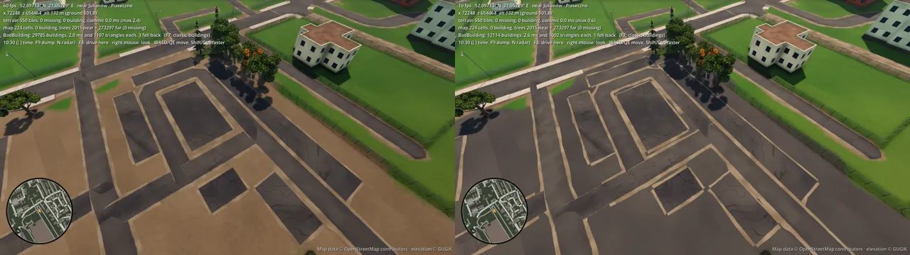
A car park near Julianów, before and after: dirt with asphalt islands, then just a car park.
The water stripes were a good mystery. The first suspect was numbers losing precision tens of kilometres from
the origin, and fixing that changed nothing. Painting the water flat blue showed the mesh was clean, so it had to
be the shading. The ripples were made from a kind of noise whose slope goes exactly flat along an invisible
grid, and the sharp reflection of the sun traced that grid as thin bright lines. Different noise, no lines.
Then the streets got furniture. The map now reads OpenStreetMap's pedestrian crossings and traffic lights:
55,139 crossings and 5,514 sets of lights in Mazowsze. Each crossing is painted the Polish way, white bars across
the whole road, with a stop line in front where there are lights. The lights stand on the right of every
approach and actually cycle, green, amber, red, the cross street out of step. Every tram track got its overhead
wire on poles, so the big Warsaw junctions finally have that tangle of cables above them.
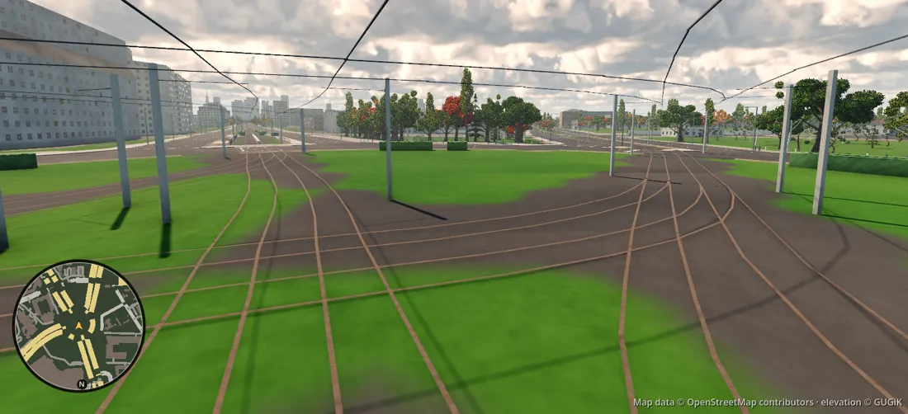
Wires over the tracks at Rondo Radosława.
Tom tried it out and pressed F9 exactly once, not to report a bug but to frame a photo. The photo also gave
away the last bug of the day: the lit lamp on the traffic light was glowing so brightly it looked white. It's
green now.
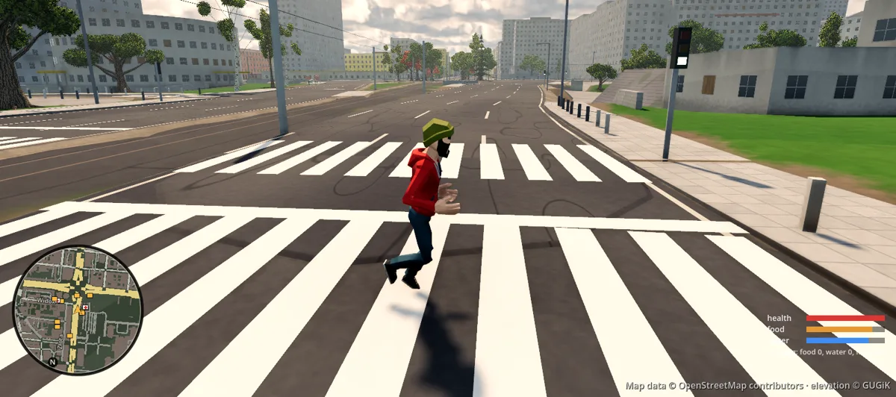
Tom's own shot. Somewhere, four lads from Liverpool are nodding.
Next on Tom's mind is grass. Not the flat green painted on the ground, but blades that sway in the wind.
Thornwake has them already, and Tom remembers how much they changed it.
"I just made one dump. And only because I wanted to make a Beatles-like screenshot. I'm loving it."
Tom
16 dumps
55,139 zebras
5,514 traffic lights
30 s per cycle
1 Abbey Road
KM32
Eighty thousand tufts
18 November 2026
Tom remembered how much grass changed Thornwake: not grass painted flat on the ground, but blades standing up
and swaying. He also worried it would hit performance badly. Both were fair, so this time the numbers came
first.
The grass is one small tuft of fourteen bent blades, drawn many thousands of times by the graphics card, and
only within 60 metres of the camera. It grows by what the map says the ground is: thick in meadows and parks,
thinner in gardens and under trees, and none on fields, car parks, roads, riverbanks or water. Towards the edge
of that 60 metres it thins out tuft by tuft, so there's no line where it stops. The blades are the ground's own
greens at the root, lighter and a little yellow at the tips, lean with the wind in waves that run across a
field, and glow faintly when you look towards the sun.
The same park in Młynów, grass off and on. G switches it in the game.
To answer Tom's worry, the game got a benchmark that stands in the grassiest spot it can find, turns a full
circle with grass on and then off, and measures the graphics card's own time per frame. In that park, eighty
thousand tufts cost 1.1 milliseconds a frame, a small slice of the 16.7 milliseconds a frame gets at 60 frames
a second. Flying showed a few extra hitches at first, because the game was building grass nobody could see from
40 metres up. Now it only grows when you're near the ground and loads two patches a frame at most, and the
hitches are back to where they were before grass.
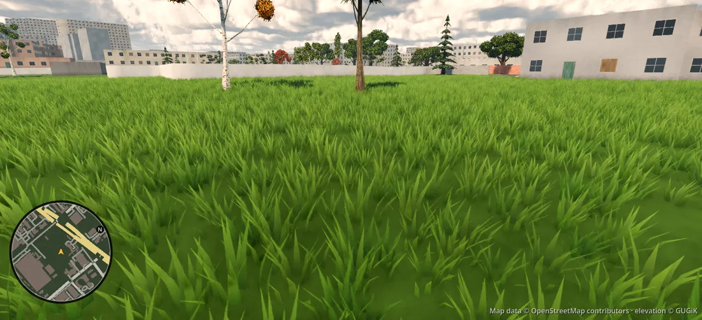
Down at ankle height, in the middle of Warsaw.
Tom's verdict: it looks great. His next wish is more variety in the colour of the ground in general, so it
isn't the same green everywhere.
14 blades a tuft
80,708 tufts
1.1 ms
60 m
G to compare
KM33
A city that doesn't stop
18 November 2026
The ground looks good up close now, which only made the distance look worse. Ordinary buildings were drawn
out to one kilometre and no further. Past that, only towers over 42 metres stood up, so from the edge of
town Warsaw's skyscrapers rose out of empty green fields. The roads went on for nine kilometres; the city
didn't.
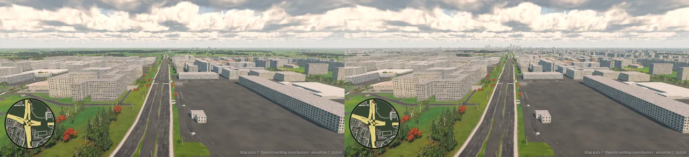
North from Służewiec: before, the city ended a kilometre away. Now it's Warsaw all the way.
A new layer now draws every building out to about nine kilometres, around a hundred thousand more of them
around Warsaw. They're cheap copies: outlines simplified, nothing to bump into, no shadows, small sheds left out
further away, each standing on the height already stored for it, so a whole two-kilometre square of city builds
in the background in moments. Within 900 metres the detailed buildings take over. Where both are drawn, the far
copy is made one percent smaller, so the real one always covers it and the two never flicker against each
other.
Then the numbers, and a small mystery. The first flight test came back at a miserable fifteen frames a
second. The cause turned out to be Tom, playing the game at the same time and pressing F9 over a church on
Senatorska, so the two copies were sharing one graphics card. Run again with the card to itself, the far city
costs about a third of a millisecond. The one real problem was a stutter whenever a whole square of buildings
appeared at once, so each square now arrives in sixteen pieces, one per frame.
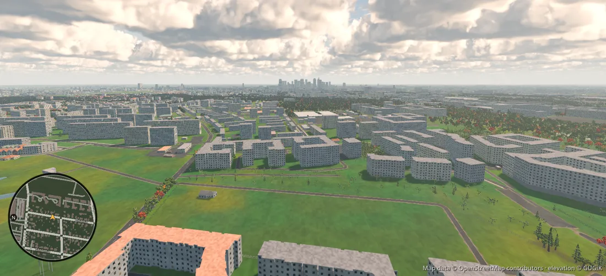
Across Wola towards the centre, 120 m up.
As for the church: the hole Tom spotted is the monastery's real courtyard, a cloister garden and a light
well, mapped just like that. What OpenStreetMap doesn't have there is the church's tall nave; the whole complex
is one flat block ten metres high. That one waits for the day landmarks get their own models.
~9 km
~100,000 buildings
0.3 ms
16 pieces a square
1 shared graphics card
KM34
The long way round
18 November 2026, afternoon
Tom went to the doctor and left Sage a free hand: "feel free to pick any step you want." Sage picked the
bandits, because until now they had one idea about getting somewhere: walk straight at it. Stand behind a
block of flats and a bandit who heard you would march into the wall and stay there, pressed against the
bricks, for as long as you cared to wait.
Now, when something is in the way, a bandit stops to think. Not out loud, and not on the main thread. The
game draws a rough map of the ground around it, a grid of one-metre squares with buildings, water, fences,
walls and hedges marked as solid and gates left open, and searches it for a way through. The winding grid path
is then pulled tight, like a string, into a few straight walks between corners. If you move, or something
unexpected like a parked car blocks the way, the bandit thinks again.
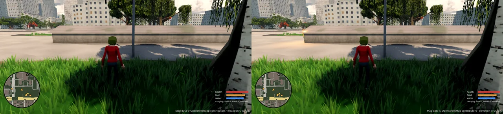
Eight seconds in. Left: the old bandit, still stuck behind the building. Right: the new one, round the corner and shooting.
The test puts a bandit on the far side of a real building near the centre of Warsaw and tells it where you
are. With the old walking, it got stuck at the wall 22 metres away for the full half minute. With routes, it
planned five legs round the building and came round the corner firing after 7.6 seconds.
That means hiding behind a building is no longer a guaranteed way to be left alone. Bandits will come round
it, and they'll come round both sides if there are several of them. Whether that makes the fights better or just
meaner is Tom's to find out next time he plays.
1 m squares
5 legs
7.6 s
0 walls hugged
1 doctor's appointment
KM35
Glass, at last
18 November 2026, late evening
Gameplay has a way of stealing the evenings. Tom noticed it too: "we still need to work on BadBuilding," and
then, when offered the next building type, "Yes, offices." Until now every skyscraper in Warsaw had the same
treatment as a block of flats: a grey box with small square windows, all the way up. Varso, the tallest
building in the European Union, looked like a very ambitious council estate.
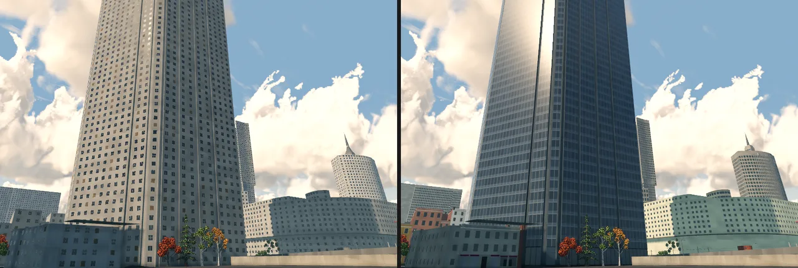
Varso from the pavement. Left: the old look. Right: a curtain wall, with the sky sliding down its corner.
BadBuilding, the library that designs our buildings, now has an office style. It looks at when a building
went up. Before 1990 you get a concrete grid of deep windows or long ribbons of glass between bands of wall;
after 2002, glass from top to bottom; in between, a bit of both. Offices get a glazed lobby with doors facing
the street, plant rooms on the roof, and the tall ones a crown. Anything over 140 metres gets a mast.
The glass itself is painted by the graphics card, not modelled: panels a metre and a half wide, a solid band
at every floor, thin frames, each panel a slightly different shade, and the sky reflected when you look along
the wall. That keeps a 200-metre tower to a few hundred triangles. The first try had frames three centimetres
wide, which is realistic and also invisible from more than 30 metres away. Now no line is ever thinner than a
pixel.
Then a surprise from the map. OpenStreetMap draws Warsaw's towers as stacks of separate pieces. Varso alone is
eleven, and many of them start 70 or 190 metres up in the air. So BadBuilding learned to build a piece that
starts in mid-air, with its underside closed off.
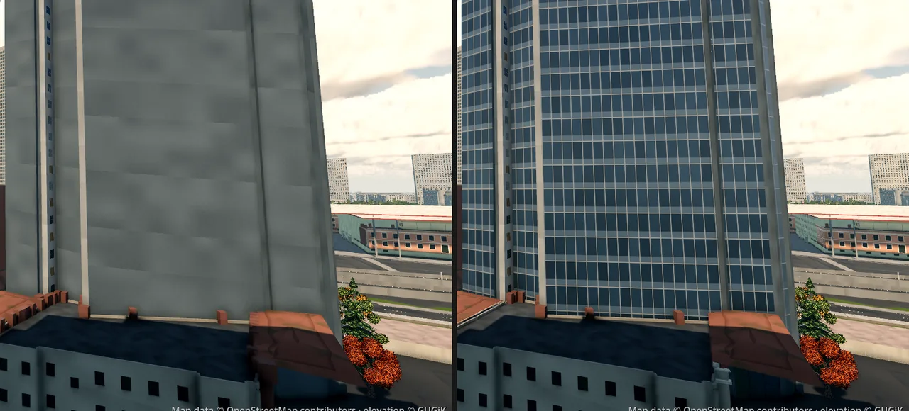
A 71-metre office near Rondo ONZ: blind on every side, until its pieces learned how tall the others are.
One tower stayed stubbornly blank, with not a single window on any side. Its low podium and the piece stacked
on top of it counted as neighbours built against it, and a wall with a neighbour against it is left bare, like
the side wall of a tenement. Now the pieces of one building tell each other how tall they are, and a wall only
goes blank where the other piece really covers it. Separate buildings still leave the bare walls Warsaw is
famous for above a lower neighbour.
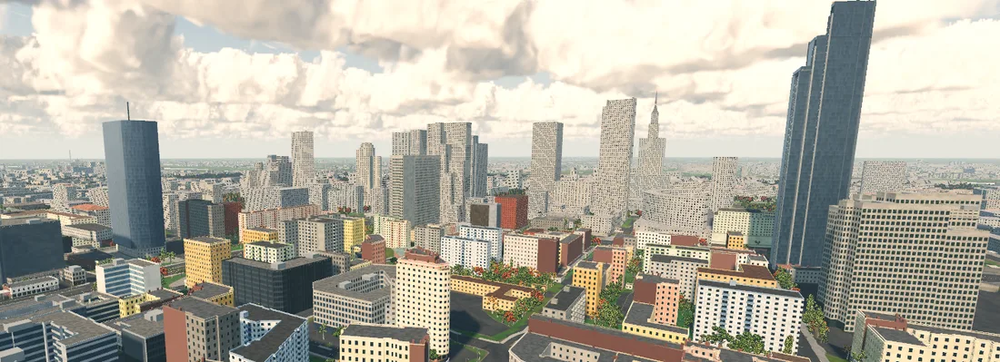
Over Twarda, 220 m up. The dark glass towers are the new offices; the pale ones further off are still the old look of the distant city.
And the frame rate? The six-kilometre flight test gives the same median as before, 16.7 milliseconds, with
slightly fewer hitches than the old buildings. The new look is in the game behind F7 for now, along with the
rest of BadBuilding. Next on its list: whole buildings in parts, socialist realism, brutalism, and Tom's garages,
sheds and cottages.
11 pieces of Varso
1.5 m panels
3.6 m floors
16.7 ms
1 tower with no windows
KM36
Picasso at the crossroads
19 November 2026
Tom came back from a drive with eight dumps and a summary: "missing segments of the sidewalks, some
Picasso-like crossings, one levitating building, and I don't remember, but there was something more."
The Picasso crossings were on Warsaw's squares. Where a street crosses a mapped square, the game rightly
leaves out the street's own pavement, because the square's paving is the pavement there. But the little rounded
corner pieces at each junction were still drawn, so they stood alone in the middle of the paving like islands,
with the zebra stripes running between them. Now a corner only appears where its pavement does. The squares got
proper paving slabs too, and so did the wide pavement on Świętokrzyska, which had been plain flat concrete and
looked like no pavement at all.
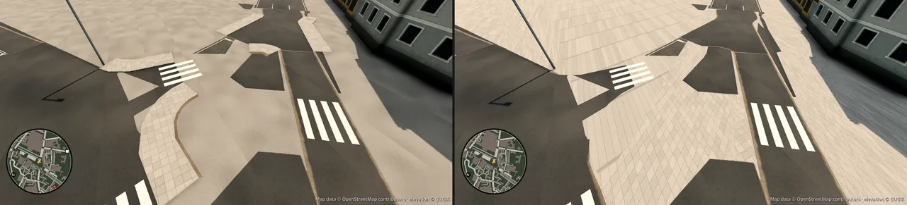
Near Senatorska. Left: corner islands in the middle of a square. Right: one paved square.
The levitating building was a tower on Fangora. OpenStreetMap had drawn its base with a hipped roof and the
tower starting right at the top of that base, so the tower hovered over the slope with a gap underneath. Now a
roof that another piece of the building stands on is flat. The "something more" turned out to be two more
tower-piece bugs: brick chimney stacks poking through the Błękitny Wieżowiec, and a roof on Aleje
Jerozolimskie sticking out through the wall next to it as a red stripe. Both are fixed.
8 dumps
6 places
0 corner islands
1 floating tower landed
KM37
Two and a half million buildings, one day
19 November 2026, evening
Noor sent over an architectural cookbook for BadBuilding: 78 kinds of building, 25 styles, and a polite
reminder that the stairs should lead somewhere. Before choosing from it, Sage counted what Mazowsze is actually
made of. Out of 2.59 million buildings, about 740,000 are houses, 550,000 are sheds and farm buildings, and
1.1 million have no type at all. Only 1,457 say when they were built. So the plan changed: houses and villages
first, because that's what you drive past, and Wrocław can wait. Tom's rule for BadBuilding: build what the game
needs first, and make it work for any map data, not just OpenStreetMap.
The first step was invisible. The game had been squashing every building type into eleven kinds, so a school,
a fire station and a greenhouse all looked the same to BadBuilding. Now the real type travels all the way
through, along with the build year, levels and materials where they're mapped. That meant rebuilding the whole
map, which took an hour. Meanwhile Sage taught the roofs a new trick: 30 % of houses are L- or T-shaped and used
to get a flat roof. Now the roof is split into wings that meet in valleys, like on real houses.
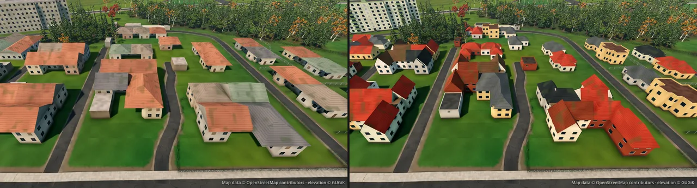
Kępa Gocławska. Left: before. Right: L-shaped houses with their roofs.
Then came the houses themselves, in five families. The chałupa is a one-storey cottage with a steep
gable, whitewashed with blue or green window trims, or built of dark weathered planks. The kostka is
the PRL cube house on a high plinth, with steps up to the door; just over half are still in grey dash plaster,
the rest in pastel insulation, the real-life mix Tom asked for. Then modern houses, semi-detached ones and
terraced rows. One village came out looking like a housing estate until Sage noticed that Polish mappers count
the rooms under the roof as a level, so a "three-level" house is really two floors and an attic.
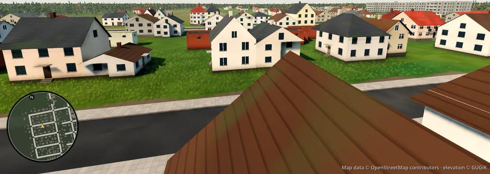
Grądy near Błonie: two floors and an attic each, as the map meant.
Behind every village house stood a red brick box, and there were half a million of them. Now they're barns
with big plank doors and a hay-loft door in the gable, low cowsheds with a row of small windows and vents on the
ridge, sheds of brick, block and planks, metal farm halls and greenhouses, almost all under the grey eternit
roofs that every Mazovian farmyard has.
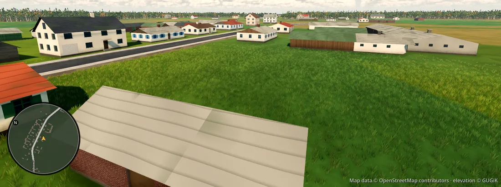
Zielanówek near Tłuszcz: cottages in front, the farmyard behind.
Garages came next: rows of up-and-over doors each painted its own colour, single sheet-metal garages, and
allotment huts in green, blue and brown planks. There are shacks too, patched with whatever sheet was lying
around, which may be the most post-apocalyptic thing in the game so far.
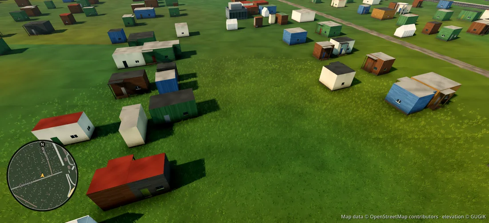
The allotment gardens by Górnicza, every hut its own colour.
Every village has its fire station, so they came next, with tall red vehicle doors facing the road, a red
sign band, and on the bigger ones a tower for drying hoses. Schools got rows of wide classroom windows and
steps up to the entrance, in the grey PRL look or renovated with one bold accent colour. One school first
came out purple next to blue, because each wing is a separate building in the map, so now buildings on one
school site share their colours.
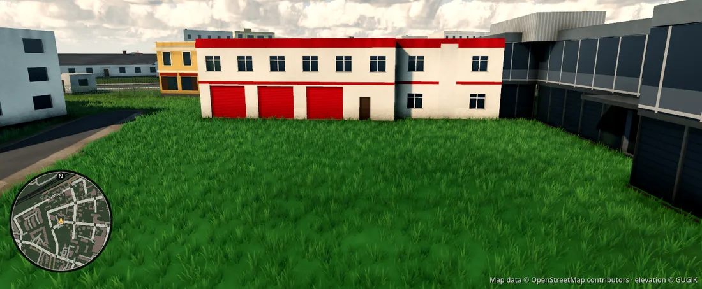
The fire station on Limanowskiego, Grodzisk Mazowiecki.
Last came the new estates, which until now were drawn as PRL blocks. They have white and grey render with
wood-look or graphite bays, glass balconies or loggias, and shops on the ground floor. Most have no build year
in the map, so the shape decides: deep blocks of six to nine storeys lean new, narrow twelve-metre slabs of
five or eleven lean PRL.
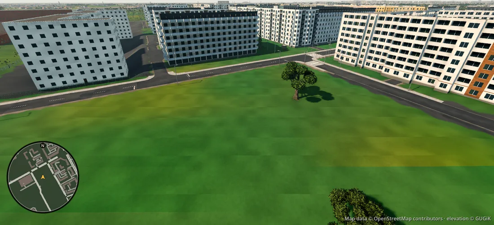
New estates by Szamoty, Ursus.
All that detail cost something: buildings got a fifth heavier, and flying got a few more stutters. Window
frames and balconies now only draw up close, and the stutters went back to where they were. It's all behind F7
for now. Still on Tom's list are socialist realism, brutalism, and whatever he spots next.
2,589,462 buildings
1,457 with a year
8 new building families
225,000 roofs back
1 map rebuild
KM38
Concrete feelings
20 November 2026, after midnight
"Bad building time," said Tom, and sent street photos of MDM, the 1950s socialist-realist district around Plac
Konstytucji, as reference. Its buildings now come in proper style: paired tall windows, a heavy two-storey
stone base, small balconies with balustrades, a cornice and a balustrade along the roof, and on Marszałkowska
the arcades, with paired columns carrying the upper floors over the pavement. The old game drew the same street as
rows of grey PRL blocks with an orange roof.
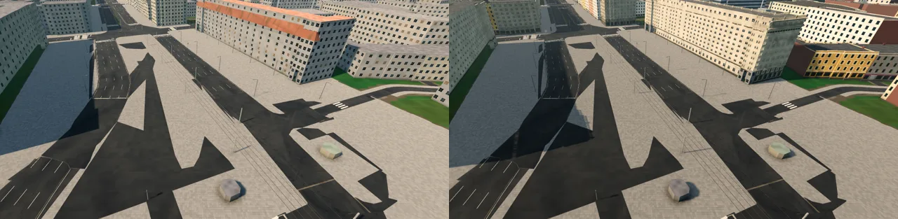
Plac Konstytucji. Left: the old buildings. Right: MDM in sandstone.
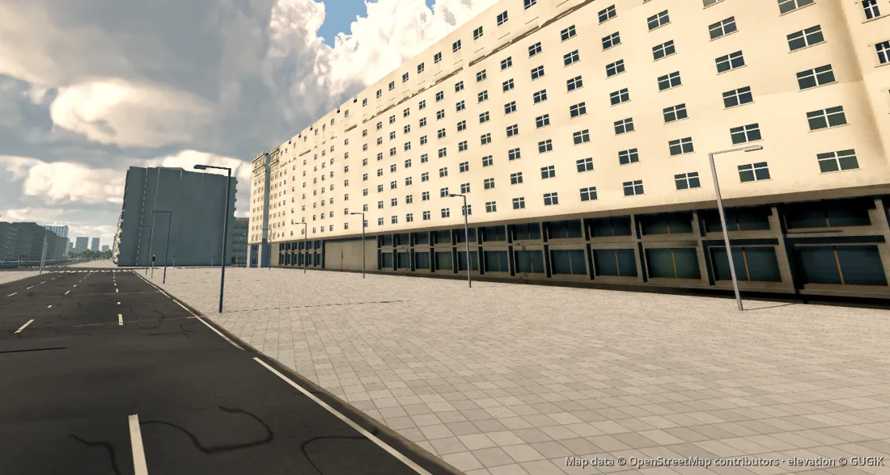
The arcade on Marszałkowska.
One wall on the square stayed blank no matter what, a flat beige cliff with no windows at all. Tom said
"chase the wall", so Sage did. Every obvious suspect was innocent: the party-wall rule, the neighbour heights,
the stone base. In the end Sage hid buildings one at a time until the wall got its windows back. The culprit
was a single piece of the building mapped inside it, with 77 corners, a few of which poked out
through the facade. Since the game draws touching walls as shared walls with no windows, the whole face went
blank. Now a piece that sits 90 % inside a bigger piece of the same building is hidden, and the wall has
windows again.
Then Tom said "Brutalism next 😃 I don't know, there is something about brutalist architecture." There is.
BadBuilding now knows five kinds of it: deep vertical concrete fins, heavy horizontal bands, an egg-crate waffle
of deep-set windows, a glazed ground floor on columns so the block above seems to float, and blank stair towers
at the ends rising past the roof. The concrete shows the imprint of its wooden formwork, one board at a time, with
tie holes and rain streaks running down from the top.
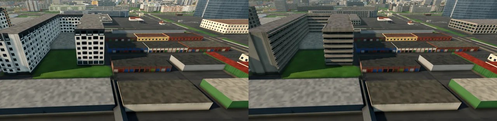
Ksawerów. Left: as mapped. Right: the same blocks in Brutalist Warsaw.
The catch is that Mazowsze's map barely mentions brutalism: one listed 1970s concrete office. So the main way
to see it is a new switch. Shift+F7 turns on Brutalist Warsaw, the city that never was: offices, public buildings
and blocks of flats go concrete, while houses, farms, churches, the old tenement streets, listed buildings, MDM
and the glass towers stay as they are. Shift+F7 again brings back the real one.
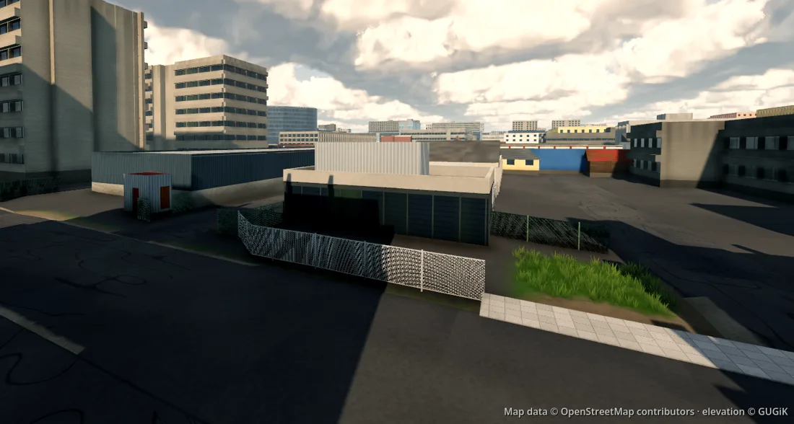
Magazynowa, Ksawerów, in Brutalist Warsaw.
1 wall chased
77 corners
5 kinds of concrete
1 Warsaw that never was
123 tests passing
KM39
The doors open
20 November 2026, morning
Tom asked when it would be a good time to start on interiors, and then answered himself with one word:
"Interiors". So now you can walk into Warsaw's blocks of flats. Get out of the car, walk up to the door of a
block, and it swings open. Behind it is a real stairwell: the oil-painted lower half of the wall every Polish
block has (the lamperia, in a different colour in each building), whitewash above, a terrazzo floor, and a
stair with a half landing that you climb on your own legs, all the way to the top floor.
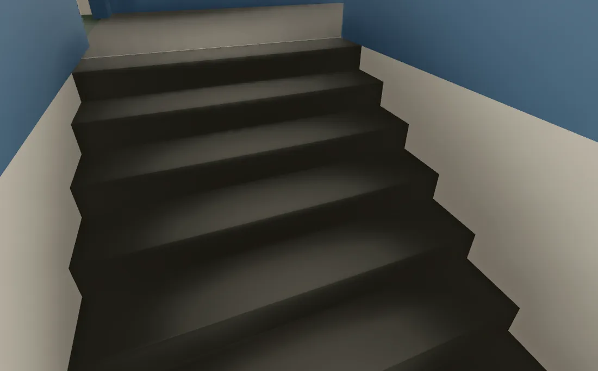
A stairwell in a fifteen-storey block on Sosnowa.
Each landing has two flats, entered only from the landing: a hall, a bathroom and kitchen on the door side, a
living room and bedrooms at the back, with wallpaper, tiles, parquet and lino. The layouts are invented, never
the real buildings' plans. But the windows aren't. The outside of every building is generated first, so the
interior takes the facade's windows exactly where they are, and when you look out you see the street the
window really faces. Stepped slabs get planned section by section, and very deep blocks get a back corridor and
storerooms. All of it is generated by BadBuilding, Sage's building library, only for the block you walk up to,
in about ten milliseconds.
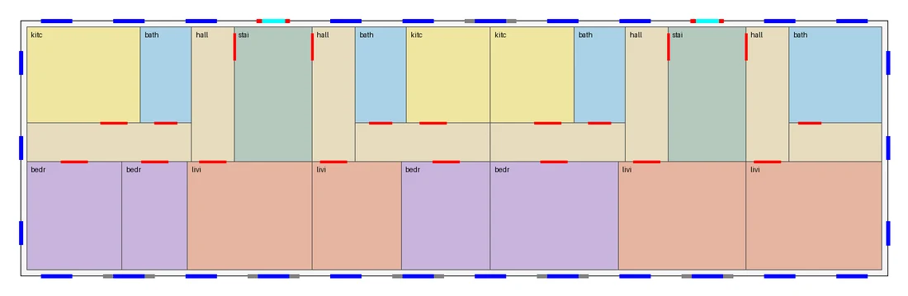
One floor of a block with two staircases, as BadBuilding plans it. Blue: the facade's windows.
Tom walked in and said it felt "very cramped", so everything grew: wider stairs and landings, two-metre
halls, bigger bathrooms and bedrooms, wider doors. Then he sent a handful of F9 dumps from inside, and they
showed something stranger. One kitchen had no walls and grass for a floor. Every surface of the interior was
facing the wrong way, so you always saw it from behind: floors and outer walls vanished, the ceilings were
really the floor of the flat upstairs, and every wall wore the next room's wallpaper. One flipped line fixed
all of it, including a "gap" by the stairs. The test can now stand exactly where a dump was taken, which is
how this one was caught.
A kitchen in Skaryszew. Left: inside out. Right: fixed.
"Balconies are not balconies 😛," said Tom. Now they are. A balcony door opens as you walk up to it, and
you can step out, lean on the rail and look at the street. A thin crack round every window, where the inside
and outside frames didn't quite meet, is closed too.
Out on a balcony, and looking back in.
Noor saw the pictures and replied in capitals, starting with "ARE THOSE ACTUAL BUILDING INTERIORS IN BALTIC
DRIVE?!" Yes they are, and her ideas are already half wired: every room knows what it is, so loot has
somewhere to go, and the roof access is already marked on every block.
And a small heart attack to finish: this morning Tom almost deleted the whole folder with every project the
studio is working on, Baltic Drive included. 😐 It survived. The code is all on GitHub, pushed after every
change, which this morning suddenly felt like a much better habit. 💜
1 heart attack
240 rooms in one block
0 floors on the first try
1 flipped line
131 tests passing
KM40
Step back
20 November 2026, mid-morning
"Make the loggias work too :)", said Tom, after promising to back up his folders. 😛 A loggia is the balcony
that isn't one: a recess cut 1.3 metres into the wall, with the window wall at the back and a glass guard at the
front, common on newer Warsaw blocks. Until now the flats behind them just had a blank wall there.
Now the room's wall steps back around each loggia. The glass at the back opens as you walk up to it, you step
into the recess, and the rail stops you at the edge. Room walls no longer poke out into the open air, and the
loggia's floor is concrete instead of the flat's parquet. The middle frame bar in the glass is gone too, so you
don't walk through it.
Into a loggia in Skaryszew, and the view from it.
Along the way, the sides of every window in the outer walls turned out to be facing into the wall instead of
into the opening, a leftover from the inside-out bug. They face the right way now, which closes the last gaps
Tom saw beside the windows. One oddity is left: where a loggia lands in front of a staircase, it opens off the
stairwell instead of a flat.
1.3 m of recess
1 rail that holds
2 mullions removed
0 blank walls behind loggias
131 tests passing
KM41
NoorFengShui
20 November 2026, late morning
Tom talked furniture over with Noor and came back with a verdict: "we need NoorFengShui module :P". So the
flats are furnished now, by a part of BadBuilding with that exact name. Each kind of room has its list. A
bedroom gets a bed with a bedside table on each side, a wardrobe in a corner, and a desk if there's room. A
living room gets a sofa, the TV on the wall it faces, a coffee table between them, a bookcase, an armchair, and
in big rooms a dining table. The kitchen's counter runs along the longest free wall with the sink under the
window, and the fridge stands at its end. The bathroom gets a bath, or a shower when the bath won't fit.
The top floor on Sosnowa, furnished.
The feng shui part is a handful of rules. Everything stands against a wall with its back to it. Nothing goes
in a doorway, in the swing of a door, or in front of a balcony door. Nothing tall stands in front of a window,
and no bed has its head under one. After every piece the floor is flooded at walking width, the way water fills
a room. If you could no longer get from every door to every other door, and to the front of every bed, wardrobe
and fridge, the piece goes somewhere else or is left out. That flood caught a bug, too: one kitchen stayed empty
because a balcony door belonging to the room next door counted as its own.
One floor, furnished. Dark boxes: the furniture.
Then Tom said what every game eventually says: "I want to be able to swap the assets with any model."
So now one small file says which model stands in for each kind: a Synty prefab, a model Tom makes later, or
anything else Godot can load. Each model is turned to face into the room and fitted to the footprint
NoorFengShui chose. Where nobody has a model yet, the generated shape stays. For now Synty supplies the couch,
the glass coffee table, the chests of drawers, the bookcase and the storeroom shelving. Beds, wardrobes,
fridges, bathrooms and TVs are still generated, because none of Tom's packs has them. For a while every Synty
piece came out white: the faint indoor glow was adding white to the textures instead of tinting them.
Synty pieces placed by NoorFengShui: the couch and coffee table, a bedside chest of drawers.
Tom's reaction: "Oh, this is so cool." And then, of course: "I already have an idea for NoorKEA." 😄
Flat-pack furniture, generated. Somebody hide the Allen keys.
1 feng shui module
22 kinds of furniture
5 of them Synty
1 flood per piece
132 tests passing
KM42
Things in drawers
20 November 2026, around noon
Tom has a goal, and he said it out loud: he wants Baltic Drive as close to Project Zomboid as we can make it.
That means our own code, our own items and our own recipes, but the same feeling of a world full of drawers
worth opening. Two pieces landed.
First, safehouses got smaller. You used to claim a whole building. Now you claim the flat you're standing in:
"the flat on the 3rd floor, left". Die anywhere in Mazowsze and you wake up on its living-room floor.
Second, things. There are 51 of them, and they live in a data file, not in the code: tins of beans, sprats and
pâté, kabanos, a jar of pickles, rusks, compote, vodka, plasters, a can opener, duct tape, a transistor radio.
You carry a pack that holds 15 kg. Every wardrobe, fridge, chest of drawers and kitchen cupboard that
NoorFengShui put in a flat can be searched: walk up to one and press F. Its contents are rolled the first time
anyone opens it, and the room matters, so bathrooms hold more plasters and storerooms more tools. Whatever you
leave behind stays there for next time.
Kitchen cupboards on Sosnowa: rice, pâté, and an empty bottle for later.
The window is the one every game has, because it works: the container on the left, you on the right. Drag
things across, double-click a pile, right-click for just one, or press E to take all. Food, drinks and medicine
have Eat, Drink and Use buttons. Eating still happens by itself when you're hungry, and now it picks whatever
fits best. A finished water bottle stays in your pack, empty, waiting for the crafting recipes.
51 items
15 kg in the pack
1 flat to wake up in
0 lines of Zomboid's code
KM43
Over the border, eventually
20 November 2026, afternoon and evening
Tom pulled us back to the map ("The temptation is great. But let's go back to map making. :P"), and the map
is growing by its first whole voivodeship: Podlaskie, Tom's holiday country. Regions are joined the simple way.
Merge their OpenStreetMap files into one, then build it as if it had always been one region. The roads across
the border come out whole, with no seam to drive over. Your safehouse and your searched drawers belong to the
world now, not to the map file, so they come along.
The map itself isn't built yet, and that's GUGiK's fault. The government's elevation server, which handed us
225 GB for Mazowsze without complaint, spent the whole day hanging up on us. Of the 347 blocks Podlaskie needs,
242 are still missing. A script now asks again every 20 minutes, very politely. In Tom's words: "GUGiK is against us
today ;(". So everything below was built in the meantime.
Wooden villages. We read up on the Land of Open Shutters (Soce, Trześcianka, Puchły) and looked at photos
of village houses. Then BadBuilding learnt Podlasie's house. It's built of boards in honey varnish, ox-blood,
brown or ochre. The gable faces the street, boarded in a chevron above a little skirt roof, under white barge
boards cut into teeth. Every window gets a white surround with a carved crown, and its shutters stand open. Tom:
"Wow, this looks amazing."
A Podlasie house from BadBuilding: chevron gable, carved crowns, open shutters.Seven seeds, seven houses. A village in the making.
Cerkwie. Orthodox churches get onion domes only where the map says they're Orthodox, which was Tom's rule
from the start. One tag needed double-checking: denomination=orthodox also means Orthodox Judaism,
and one synagogue in the data is tagged exactly that. It stays a synagogue. The churches get a drum and onion
over the nave, a small onion over the sanctuary, a tower at the west end and gilded eight-pointed crosses. In
Podlasie most are wooden and painted blue.
A village cerkiew, blue as most of them are.Warsaw's Orthodox cathedral in Praga, now with a golden onion.
The Tatar mosques. Two wooden mosques still stand in Podlasie, at Kruszyniany and Bohoniki, and they are
nothing alike. So BadBuilding builds both, and the footprint chooses. A long one gets Kruszyniany's look: green
boards, two tall towers at the front with dark cupolas, an arched porch. A square one gets Bohoniki's: plain
wood, a hipped roof, a lantern with a dome in the middle. Every cupola is topped with a crescent. Modern mosques,
like the two in Warsaw, get plaster, a dome and a minaret.
Kruszyniany's kind: green boards, two towers.Bohoniki's kind: square, with a lantern on top.
Forests and storks. Podlaskie's woods have more spruce than Mazowsze's. Four named forests get their own
mix: Białowieża (old oak and spruce, bigger trees), Augustów, Knyszyn, and the Biebrza marshes, which are mostly
birch and willow. And storks. Villages rarely have their electricity poles mapped, so the storks get their own
poles in the yards, the way people put them up for them. In Podlasie you'll find one by about every
fourteenth house.
The first stork, near Żyłowo, on the Mazowsze side of the border.
All of it fades in over the last 12 km before the border, house by house and tree by tree. The style doesn't
stop at a line on a map. Now we just need GUGiK to pick up the phone.
1 new voivodeship (pending)
231 Orthodox buildings in the data
2 Tatar mosques
4 named forests
1 stork nest per ~14 houses
242 elevation blocks to go
157 tests passing
KM44
Bells and a back door
20 November 2026, night
GUGiK still wasn't answering, so we went round the back. Their elevation also comes as map sheets: thousands of
small files on a different server, and that one answers instantly. The same script that once patched
Mazowsze's holes now fills all of Podlaskie from them. It downloads 3,812 sheets, about 140 GB, shrinks each one
to our 10 m grid and deletes it straight away, so the disk keeps a few hundred MB. Tom's verdict: "If that won't
hurt the game, feel free to do that." It won't: the data is the same, it just comes in smaller parcels. It takes
a few hours, so meanwhile there was time for the churches that make up most of the skyline.
Poland has about 3,000 churches and chapels in our map data, most tagged Roman Catholic. BadBuilding now builds
five kinds. If the map gives a build year or a material, that decides; otherwise it's chance.
Neo-Gothic red brick, the classic village and town church: a steep roof, pointed windows between
buttresses, a west tower with a belfry, clock faces and a dark spire. Big ones get two towers.
Baroque: white, cream or yellow plaster with pilasters, round-headed windows, and a tower under a
bulb, a lantern and a smaller bulb.
Modern, after 1945: tall strip windows, a low roof, and a tall slender tower carrying a big cross.
Wooden: dark boards, a boarded tower, a little commoner in Podlasie.
Chapels: small and plastered, with a bell turret on the ridge.
The family: chapel, apse, baroque, neo-Gothic, modern, wooden.Buttresses, pointed windows, a slate-dark spire. And a baroque neighbour.
Every church faces east, so the door and the tower are at the west end, as they should be. Many OSM church
outlines have an apse, a rounded or three-sided end that a simple roof can't cover. So the steep roof covers the
nave's rectangle, cut back until it fits, and the apse gets a flat roof. Orthodox churches keep their onions,
synagogues stay synagogues, and a wayside shrine the size of a wardrobe is left alone.
A village church near Pałapus, by Ostrów Mazowiecka.
~3,000 churches and chapels
5 kinds
1 apse problem, solved
3,812 elevation sheets on their way
167 tests passing
KM45
Our own cars, and a Maluch ❤️
21 November 2026
The car you drive is still a Synty sedan with a pickup's soul. That's about to change. Tom is making the game's
cars himself. Noor draws the concept art: our own designs that look like the classics without being copies, and
with no real badges. Meshy turns that into a low-poly model, and Meshy has got good at low-poly: the first one
came out around 16,000 triangles and already split into parts. Tom cleans it up in Blender. The first one is a
hatchback that will look very familiar to anyone who grew up in Poland. It isn't a Polonez. It just has the soul
of one.
Before the first model, we wrote down how a car has to be built so it works the first time. One GLB per car,
nose forward, origin on the ground. Every door, the hood, the trunk and the wheels are separate pieces, and each
is pivoted where it turns: doors on their hinges, wheels at the hub. The glass, the seats, the engine and the
battery are real pieces too, the same ones the game already tracks for damage. So in the workshop the part you
repair will light up, and a part you take off really comes off. The trunk, the back seat and the glovebox will
become containers, opened in the same window as kitchen cupboards. The body paint gets its own material, so
every car can come in its own colour.
And then Tom said the important thing: "I do have to make something similar to Maluch ❤️ actually had one."
So there will be one. The engine is at the back and the boot at the front, and the guide now handles that. It
weighs next to nothing and does about 105 km/h flat out, with a tailwind and optimism. It has the air-cooled
two-cylinder rattle. And there's room for your friends' gear, just barely, with someone's backpack on their lap.
One thing came up while we were at it. Tom: "It's so easy to tip the car." He was right: the first
sharp lane change at 50 km/h rolled it onto its side. The tyres gripped like glue, about three times what real
tyres manage, so instead of sliding the car pivoted over them. Now they grip like real ones and slide first, and a
quiet helper acts like stiff anti-roll bars. A test drives lane changes up to 90 km/h, full-lock turns and a
handbrake turn through central Warsaw, kerbs and all: at most 6° of lean, no flips. A real crash still rolls you.
~16,000 triangles per car
11 kinds of part to repair
3 containers per car
1 Maluch, for Tom
0 flips at 90 km/h
KM46
Five cars, five characters
21 November 2026
Tom drove the no-more-flipping car and gave it his verdict: "Feels better, but a little bit too slidey." Fair:
we'd gone from glue straight to an ice rink. And then the bigger question: "Can we have settings for different
cars? Because I believe they all will handle differently."
They do now. Every car's handling lives in a small data file: its weight, how hard the engine pulls, top speed,
which wheels drive, grip front and rear, steering lock, brakes, springs and dampers, how high its weight sits,
and how much the anti-roll helper holds it. A car finds its entry by the name of its model, so a new car only
needs a few new lines, and no code.
The sedan (also the taxi and the police car): 1,300 kg, front-wheel drive. A bit more grip than
yesterday, so it's less slidey and still never rolls.
The pickup: heavier, rear-wheel drive, with its weight higher up. In the same test it leans more than
twice as far as the sedan, 14° against 6°, and stays on its wheels.
Muscle and sports cars: lots of power and a rear end that wants to come round.
Vans and ambulances: 2,400 kg, tall, slow to turn, with stronger anti-roll.
The small classic: 600 kg, engine and drive at the back, 105 km/h if the wind is kind. It's empty for
now, waiting for Tom's Maluch. When that model arrives, it'll find its settings by itself.
No pictures this time. Handling doesn't photograph well, but believe us, it's awesome. 😛
5 kinds of car
15 numbers each
0 lines of code per new car
1 entry waiting for a Maluch
KM47
Podlaskie, for real
21 November 2026, early morning
The back door held. GUGiK's sheet server handed over all 3,385 pieces of Podlaskie's ground: 124 GB downloaded,
each piece shrunk to our 10 m grid and thrown away, a few hundred megabytes kept. Tom restarted his PC halfway
through and nothing was lost; the download picked up where it stopped. Then the build ran for 80 minutes, and
the map was no longer just Mazowsze. 16,861 tiles, 22,109 named places, and the border between the two
voivodeships is just a line on a map nobody drives by any more. No seam, no wall, no jump.
Then a tour, the way you'd show a friend around your holiday region. Kruszyniany first: the green wooden
mosque, standing among spruces exactly where the map says. Bohoniki's square one with its lantern. In Białowieża,
a green cerkiew with dark onion domes behind the trees, and the village around its ponds. The Narew marshes at
Pentowo, winding and wet. Little Tykocin by its river. Around Trześcianka alone, 94 stork nests.
Kruszyniany's mosque, green boards and an arched porch.Białowieża: the cerkiew behind the trees.
One thing looked wrong. Trześcianka and Soce, the Land of Open Shutters itself, were full of modern houses with
garage doors. The detective work: almost every building there is mapped as a plain "building", with no height, so
our importer guesses 6.5 m, and BadBuilding read that as two storeys, which ruled out a cottage. The game now
knows a guess when it sees one and leaves the house to decide for itself. In Podlasie that means wooden, most of
the time. Now the street through Trześcianka has an ox-blood house with white surrounds, open shutters and a
porch, honey-varnished houses down the road, and a few newer brick ones in between, like the real thing.
Trześcianka, after the fix.Soce: a long house with its shutters open.The Narew marshes at Pentowo.Białowieża from above, the forest all around.
Not yet: driving across the border at Zambrów by car rather than by camera, and Białystok's own look. And the
next voivodeship. North, towards the sea.
16,861 tiles
22,109 places
3,385 elevation sheets
124 GB through the back door
1 PC restart survived
94 stork nests round one village
KM48
Bandits are coming, and the bandage takes five seconds
21 November 2026
Tom is a Project Zomboid fan, and he named the two things he loves about its crafting. First, a recipe asks for
something that can hold water, not one particular pot. Second, making things takes time. "Imagine you have
to craft a makeshift bandage out of a rag while bandits are coming your way." So now items have tags. A coffee
mug is both something to hold water and a cup. Scissors count as something sharp for kartacze,
and vodka counts as strong alcohol for a molotov. A bottle of water hands back its empty bottle when it's
used up. And Make starts a bar: five seconds for a bandage, a whole minute for kartacze. The world keeps going.
Nothing is used up until it's done, and if you get hit the work drops from your hands.
Two seconds into a bandage. Recipes ask for things like something to light a fire.
Then a design question from Tom: power and water, or total blackout? The answer: the grid is dead, but
local power isn't. Taps are dry; there are wells, rivers to boil, generators, car batteries and the odd solar
roof. That afternoon Tom modelled a generator in Blender, red tank and black roll-cage frame. Then he made a
petrol can, this time with Meshy AI. Both are in the game. Generators stand beside farms, sheds, works and the
odd house, always the same ones in the same places. Some have a can beside them, and most are nearly dry.
Pour a can in, pull the cord, and a bare bulb lights up, smoke puffs and the frame shivers.
Tom's generator and his Meshy can, in Trześcianka.The only light in the village. Everyone can see it. And hear it.
That's the catch. A running generator is loud: bandits within 110 m come to look, and more turn up while it
runs. In the test, a bandit 80 m away stopped patrolling and started towards it within seconds. Lights at
home cost you attention. You can pick a generator up and carry it home, slowly and with no hand free for a
gun.
Two metres a second, no running, no shooting. Choose your route home carefully.
20 tags
bandage: 5 s
kartacze: 60 s
tank: 6 L, a litre every 4 minutes
heard at 110 m
2 generators found round Trześcianka
KM49
No more kartacze on a lighter
21 November 2026, evening
Until today you could cook kartacze in the middle of a forest with nothing but a box of matches in your
pocket. Now cooking needs heat: a campfire, or a camping gas stove with a canister. You build the fire yourself
from two armfuls of wood and an old newspaper. It burns for ten minutes, and you feed it more wood to keep it
going.
The wood comes from trees. Tom's idea: "chopping down trees, breaking furniture". Stand at a tree with an
axe, and six seconds of knocking gets you two or three armfuls. A bandit's bullet or a step away interrupts it,
just like crafting. Each tree gives its dead wood once, and remembers that it did.
Six seconds of chopping. (The swing animation is still on the wish list.)Stones, logs, an old newspaper. Ten minutes of fire.And at night, the brightest thing for a kilometre. Bandits notice too.
Water got honest too. Kneel at a river or a pond with an empty bottle and you can fill it. Drink it as it is
and it costs you: "It tastes of mud. Your stomach turns." Boil it in a saucepan first and it's a bottle of water
like any other. Not yet: breaking up furniture for firewood (in a flat it's all one model, so the wardrobe
wouldn't disappear), village wells from the map, and cooking on an electric cooker powered by your
generator.
6 s to chop
10 minutes of fire, 30 at most
8 health for drinking the river
1 in 4 cookings empties a gas canister
5 new items
KM50
You can't make kartacze. Yet.
21 November 2026, evening
Not everyone knows how to make kartacze, and in Baltic Drive you don't either, until you've read
Kuchnia podlaska. Everyday things everyone knows: tearing a sheet into rags, a makeshift bandage,
building a fire, boiling water, rice, soup, tea. The special recipes come from books found as loot: the
cookbook in kitchen cupboards, a first-aid booklet in medicine cabinets, a survival handbook on shelves.
The bottom of the list: what you could make, if only you'd read the right book.
Reading takes fifteen seconds, with the same bar as crafting, so the same bandits can interrupt it. What you
learn stays in your head: dying doesn't forget it, and the book can go to a friend or into the campfire. Each
book brought something new too. The cookbook teaches placki ziemniaczane (potato pancakes, without flour
or oil, because the apocalypse). The first-aid booklet teaches turning vodka into disinfectant, and "doesn't say
what else it's good for".
Seven seconds into Kuchnia podlaska.
3 books
5 recipes to learn
15 s to read
6 placki from 2 bags of potatoes
0 flour
KM51
Practice makes placki
21 November 2026, night
Five skills, learnt the Zomboid way: by doing. Cook, and you cook faster. Patch yourself up, and bandages do
more. Chop wood and build fires, and the axe bites quicker; from level 3 every tree gives an extra armful.
Fiddle with car parts in the workshop, and engines come out sooner. Hit what you aim at, and the sights stop
wandering so much.
Five pots of rice later: Cooking 1, and the Make buttons already show the shorter times.
Levels go from 0 to 5, and each skill is yours for good, like the recipes from books. The self-tests practise
too, a lot, so they keep their XP in a scratch file. Otherwise every test run would have quietly made Tom's
survivor a master chef.
5 skills
levels 0 to 5
50 XP for level 1
10% faster per Cooking level
0 free master chefs
KM52
The bigos test
22 November 2026
Every Polish family has a bigos, and every one of them is right. Ours starts with sauerkraut in your
saucepan, which becomes the pot. Six servings, and for now they're thin. Then it grows with whatever you find:
meat (kiełbasa if you're lucky, a tin if you're not), dried mushrooms, prunes, fresh cabbage, an onion. Then you
reheat it, because everyone knows bigos is best on the third day. Thin, decent, proper, very good, and if
you've got everything and patience, like babcia's.
Six servings, very good. The camping stove ran out of gas on the third reheat.
A very good pot is three times as filling as a thin one. Eating takes a serving, and the last one gives you
your saucepan back. Behind the scenes, a pot remembers what's in it through its own name: meat, mushrooms,
prunes and onion, reheated three times, written as bigos:KMGPO:6:3. So it survives being stuffed
into a wardrobe and taken out again.
All of it is checked by a self-test called, officially, the bigos test. Tom couldn't stop laughing.
It starts a pot in the middle of Warsaw, adds four things (and tries meat twice), reheats it three times
(and tries a fourth), puts it in a box and takes it out, and then eats all six servings, one after another,
standing in the street. It passed.
6 servings
5 things to add
3 reheats, max
42 food a serving, very good
1 saucepan back
1 bigos test, passed
KM53
Day 312, and the kiełbasa has seen better days
22 November 2026
Food goes off now. Kiełbasa keeps four days and then goes stale for four more. Cooked rice and kartacze last
two. Hot soup is for today. Potatoes and onions last weeks, and tins, jars and dried mushrooms never go off.
Stale food fills you less. Rotten food barely fills you and makes you ill, so your survivor never eats it
without being told to, and recipes won't touch it. Fresh and stale kiełbasa are two rows in your pack, so you
choose which to eat.
One fresh, one stale. Eat the stale one first.
The clock it runs on is play time: an hour played is a day for food, and the world waits while you're away.
A new world starts on day 312, the day Noor's and Sage's lore notes keep coming back to. So when you
open a fridge, what's inside can be anything from fine to very much not fine. Bigos, as tradition demands,
survives this best: reheat it and it's fresh again.
And a question from Tom: is the game data-driven, so new things can be added without touching the code?
Mostly it already was. Items, recipes, loot, skills, sandbox settings, cars and regions are all plain JSON
files. The one shortcut was bigos's ingredient list. Now any "evolved" dish is data, so the next żurek is a
few lines of JSON.
1 hour played = 1 food day
day 312 to start
kiełbasa: 4 days fresh, 4 stale
stale fills 60 %
rotten: -10 health
0 lines of code for the next żurek
KM54
Zeszyt w kratkę
22 November 2026
Tom wanted a cooler inventory and crafting screen, and didn't want to break anything. We drew three ideas: a
rucksack of item tiles, a survivor's squared school notebook, and a workbench. Tom picked the first two
together. Your things live in the rucksack: category tabs, a weight bar that goes amber and then red, tiles
with a little freshness strip, and a paper label for whatever you pick. Crafting lives in a notebook.
The notebook and the rucksack. The round badges hold the place until the icons come.
The notebook is a zeszyt w kratkę, the squared exercise book every Polish kid has filled with maths.
A red margin, sticker tabs (Gotowanie, Bigos, Apteczka, Ogień…), and recipes written in ink. What you can make
is ringed in pencil, what you have is ticked in green, and what you're missing is written in red. The recipes
you haven't learnt sit under "Jeszcze nie umiem", "I can't do these yet", each with the book that would teach
you.
Reading Kuchnia podlaska, seven seconds in. The pencil bar fills as you go.
Underneath, nothing changed. It's the same items, recipes, freshness and timed crafting, and every test
passes on the new screen. Next: Codex is drawing 78 item icons and the notebook's paper, staples and pencil
marks.
2 of 3 ideas, together
9 rucksack tabs
7 sticker tabs
1 handwriting font
78 icons on the way
KM55
Seventy-eight little paintings
22 November 2026
The placeholder badges lasted an afternoon. Tom sent the brief to Codex, and back came a painted icon for every
one of the 78 things you can carry, all in one family. A tin of beans with a paper wrap, the kiełbasa
horseshoe, two kartacze on a plate, a glass of tea in its metal koszyczek, a dented enamel saucepan,
the red jerrycan, and Kuchnia podlaska with a folk-pattern cover.
All 78, on one sheet.
The notebook got its proper paper too: a painted page with its own squares and red margin, coloured sticker
tabs, a pencil line under "Przepisy", pencil ticks and crosses, and pencil rings round what you can make.
Someone left a coffee ring by the title.
The notebook and the rucksack, painted.Opening a kitchen cupboard: prunes, jam, sauerkraut. Bigos, then.
78 item icons
9 category icons
3 freshness badges
12 notebook pieces used
1 coffee ring
KM56
Kłopoty, or: trouble
22 November 2026
Most of the people who'll play Baltic Drive first are Tom's friends, and they speak English. They wouldn't know
that Kłopoty means trouble, even though, Tom says, they cause plenty of it. So the game speaks two
languages now: English by default, Polish one click away in the F10 window.
The same notebook, in English and in Polish.
It's one game, not two. Every word of the inventory and crafting has an English and a Polish version, and so
do all 86 items, 21 recipes and 5 skills. Polish grammar has seven cases and three plurals, so the Polish
messages are worded to stay correct: "Zjedzone: kiełbasa", "Brakuje: garnek bigosu", and a bigos with
"5 porcji" but "2 porcje". The notebook stays a Polish school exercise book either way. That part's the
charm.
Plecak po polsku: "garnek bigosu (5 porcji, porządny)".
2 languages
105 interface phrases
86 items, 21 recipes in Polish
1 porcja, 2 porcje, 5 porcji
1 chaotic crew, catered for
KM57
Rąbię... 46%
22 November 2026
Yesterday only the inventory spoke Polish. Now the whole game does: the controls along the top, every "F: …"
prompt, the notes at the bottom, the car's parts in the workshop, the GPS ("potem w lewo, jeszcze 2,4 km"), the
bandits' radio chatter, waking up after you die, and the settings window. That's 315 phrases, each in English
and Polish.
Rąbię... 46%. The map credit is in Polish too, and it stays on screen in both languages.
Some things don't translate word for word. A bandit's note can't say "na Grochowskiej" without the game knowing
how to decline every street name in Poland, so the Polish version gives an address instead: "Orlen,
ul. Grochowska". The gangs got proper Polish names: ekipa Kuby, chłopaki z Pragi,
dresiarze. Floors start at the parter, the way Polish blocks do.
Ustawienia piaskownicy, with the language switch at the top.
Translating found a bug, too: two settings, "Food spoils" and "Generators", had never shown up in the window
at all. They have their own group now.
315 phrases
2 languages
8 gangs, renamed
1 parter
2 settings found hiding
KM58
Studnia
22 November 2026
With the grid dead, the taps are dry and the rivers want boiling. So where does a village get its water? From
the well in the yard, the way Polish villages did for centuries. The map now knows the wells, hand pumps and
springs that OpenStreetMap records. Stand at one with an empty bottle and you get clean water, no boiling
needed.
A mapped hand pump, painted the colour they always are.
The trouble is, OSM mappers rarely bother with wells: all of Podlaskie has just 79. So the game adds its own,
the way real villages have them: in about one yard in six, by one farm in three, almost never in a town, and
never among blocks of flats. Mostly bucket wells with a crank and a little roof, some hand pumps. They're the
same ones every time you come back. The countryside is now where you go for water, which suits a story about
getting out of the city.
A well in a Trześcianka yard. Clean water, one bottle at a time.
79 wells mapped in Podlaskie
1 in 6 village yards with one now
1 in 3 farms
0 in blocks of flats
0 boiling needed
KM59
Wężyk
22 November 2026
Until today every car in Poland ran on air. Now each has a tank and a real thirst: the sedan holds 50 litres
and burns about 8 per 100 km, a lorry 300 litres at 30, and the little classic waiting for Tom's Maluch just 21
litres at 5.5. Put your foot down and it drinks more. The gauge sits above your health while you drive, and the
last half litre makes the engine splutter before it dies.
Twenty litres in a fifty-litre tank. The new gauge is the yellow one on top.
The abandoned cars have a little left, sometimes. A third are bone dry, most of the rest are near the bottom,
and the ones that still run have enough to get you somewhere. So you'll want a siphon hose, a wężyk,
from a shed or a garage shelf, and an empty can. In the workshop it takes ten seconds to pull five litres out
of any car, running or not. Then you pour the can into yours.
Spuszczam benzynę... Every wreck by the road is now a petrol station, if you brought the hose.
6 tanks, 21 to 300 litres
10 L/100 km measured
1 in 3 wrecks bone dry
5 litres a can
10 seconds a siphon
KM60
Tankowanie
22 November 2026
Yesterday's petrol came out of wrecks five litres at a time. Today the petrol stations work, sort of. Every
station on the map (there are 71 within 4 km of central Warsaw) now has pump islands under its canopy and
thousands of litres in tanks under the forecourt. Some of them, anyway: a quarter were drained before you got
there.
An Orlen on Towarowa. Plenty of petrol under there, and no way to get it out.
The catch: the grid is dead, and a pump is an electric thing. So you need a running generator nearby. Some
stations keep one by the canopy (empty, usually), or you carry your own in, pour a can into it, pull the cord,
and the screens light up green. Park beside the island, press F, and it fills at a litre and a half a second
while the generator roars and every bandit in the district hears it. Or fill your empty cans instead.
Filling... 14 of 50 litres. Keep an ear out.
71 stations near Warsaw
1 in 4 drained
up to 5,000 L below
1.5 L a second
1 generator needed
KM61
Bagażnik
22 November 2026
A rucksack holds 15 kilos. A car holds a lot more. Walk round to the back of any car and press F: the boot
opens beside your pack, and you drag things across. A sedan's boot and back seat take 60 kg, a van 350, a lorry
800. Tom's Maluch, when it arrives, gets 25 kg under the bonnet at the front, because that's where a Fiat 126p
keeps it. Stopped in the car, Tab opens it from the driver's seat.
Firewood, water and a full can in the boot. The pack is light enough to run with again.
Abandoned cars have boots too, and sometimes something in them: a bottle, a coil of rope, an empty can, now and
then a siphon hose. Everything you leave in a boot stays there. And a car loaded with 50 kg of firewood is 50 kg
heavier to drive.
Getting this into Polish turned up a nasty crash. Open the inventory a second time, in Polish only, and the
game got stuck laying out the category tabs, around four million times in a second, until it fell over. The
longer Polish names ("Materiały", "Narzędzia") were enough to stop the layout ever settling. Fixed.
25 to 800 kg
6 boot sizes
1 Maluch boot at the front
4,177,808 layout calls
1 crash fixed
KM62
Dystrybutor
22 November 2026
The petrol stations had pumps made of boxes, standing in until someone modelled a real one. Tom did, in Blender,
the same evening: a grey cabinet with a red panel and a red cap, dark posts each side and a screen. It's a
work in progress, he says, and he'll make it better. It already looks like something you'd fill up a Polonez
at.
Powered: the screen lights up green while a generator runs nearby. Without power it stays dark.Under the canopy at the Orlen on Towarowa.
1 pump, modelled by Tom
4.3 m in Blender
2.3 m in the game
1 screen that lights up
KM63
Lodówka
22 November 2026
Every flat in Warsaw has a fridge, and since the power went they've all been very expensive cupboards. Now they
work again, if you bring the power. Run a generator within 40 metres of a flat (picture an extension lead
dangling out of a third-floor window) and the fridge hums. Food inside lasts three times as long.
"The fridge kept things cold for 20 min." It's only a can of cola, but still.
To make that worth anything, generators had to stop cheating. Until today, one you left running at the
safehouse simply paused when you walked away. Now it keeps burning while you're gone. Come back an hour later
and it ran its tank dry 36 minutes ago, and the fridge knows it was only cold for 24 of those minutes. So the
petrol you siphon and pump now keeps your kabanos fresh too. Everything is connected, which is either good game
design or the start of a spreadsheet.
3× longer fresh
40 m of extension lead
24 min a tank
0.74 vs 1.00 days old
KM64
Młotek i gwoździe
22 November 2026
The safehouse has been a dot on the map. Now you can build things in it, and anywhere else. Pick
Build a workbench in the notebook and the window closes. A see-through workbench follows your eyes,
green where it fits, red where it doesn't ("Something's in the way"). Turn it with R, press F, and the
hammering starts while it rises out of the ground.
The ghost: green means it fits.
Part one has four things. A workbench, where you cut planks to size. A barricade of boards for
doors and windows, which stops bandits and bullets until it's been hit a dozen times. A crate that holds
50 kg. And a rain collector: a plastic barrel under a bed sheet tied to four posts, a bottle of clean
water every few minutes. In Poland, in November, you'll never run short.
Crate, barricade, workbench, rain collector. Stand-ins for now: Tom's models will take their place.
Everything here is made of boxes for now, the way the petrol pumps were until Tom modelled one. When his
models arrive they drop straight in.
4 things to build
1 new notebook tab
12 hits a barricade
1 bottle every 6 min
0 buildings harmed
KM65
Bandyci z klocków
24 November 2026
Until today every bandit in Baltic Drive was a bought character from an asset pack we're not allowed to share.
Download the game from GitHub and the streets were empty. Nobody to run from, nobody to shoot.
Then Tom turned up with two new studio projects. BadCharacters generates people from a seed: a body, a
face, clothes, a skeleton and 87 animations, from walking and crawling to eating soup and sitting cross-legged
on the asphalt. BadGun generates guns the same way, and the two have just learned to work together. We
lined up a few in Warsaw, tried two looks, and Tom picked the blocky one: brick.
Talking, sitting, eating, a gas mask, a scarf. Eight bodies from eight seeds, all ours.
They slot straight into the old bandit's place. Same skeleton names, same brains, same Mosin held by the same
arm code. The hands needed one fix: brick people wear mittens, and the code was looking for fingers.
On patrol on Emilii Plater. Seconds later he crouched and fired.
Next the guns go the same way. The player's red hoodie is still a bought one too. Not for long.
8 bandit bodies
87 animations each
~1,300 triangles a person
0 fingers
1 player still in a hoodie
KM66
Broń z generatora
24 November 2026
The guns went the same way as the bandits. All three were bought models we couldn't share. Now they come from
BadGun, Tom's gun generator: pick a type, an era and a seed, and out comes a painted gun with its own
moving parts and animations.
The armoury: three pistols, a bolt-action rifle and a drum-fed submachine gun. All WW2-style, all generated.
We hung eighteen of them over Emilii Plater and Tom picked. A long bolt-action rifle takes the Mosin's
place. A submachine gun with a round drum magazine replaces the AK, which feels a lot more like Poland.
And three pistols, the three that didn't look like each other, so bandits carry different ones.
The nice part is what the guns know about themselves. Each one says where your hands go, where the bullet
leaves, where the cases fly out, and how its bolt, slide and magazine move. The game used to have all of that
typed in by hand, gun by gun. Now it just reads it.
Shouldered, fired, and the bolt worked by hand. 12 targets out of 12 on the range.
18 guns tried
5 kept
71 rounds in a drum
0 guns typed in by hand
1 hoodie still bought
KM67
Do tyłu, marsz
24 November 2026
BadCharacters had a big day: walking backwards, side steps, turns, gestures, hit reactions, ways to die and
ways to get up. The bandits were made again from the same seeds, same faces, and now know 136 moves instead of
87.
Until now a bandit backing off to cover played its walk in reverse, which looks about as good as it sounds.
Now it really steps back, and sidesteps when it moves across you.
One thing we caught on the way: a bandit with the new submachine gun was firing fifteen rounds a second and
could drop you from full health in three seconds. Bandits now pull the trigger no faster than they did with the
old rifle. You get a fighting chance again.